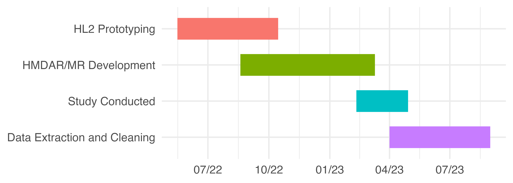
4 Methods
This study addresses the identified gaps by comparing three AR/MR technologies against each other and a paper-based control in a real-world manufacturing assembly training context. The approach is unique in its use of an affordance-based framework and comprehensive assessment strategy that examines immediate learning outcomes, recall, and retention, along with workload, usability, and qualitative feedback. Authentic assembly processes and validated training methods help ensure ecological validity.
The experimental design, data collection procedures, and analysis strategies are detailed herein. This chapter begins with an overview of the key components of the research methodology, followed by a comprehensive description of the measures and variables used to assess learning, recall, and retention outcomes. The experimental procedures are then outlined, including participant recruitment, random assignment to treatment conditions, and the conduct of the training sessions. Considerations for compliance with ethical guidelines and the steps taken to ensure participant safety and confidentiality throughout the conduct of trials are also discussed. Finally, data extraction and analysis procedures are described in detail, highlighting the use of both quantitative and qualitative methods to gain a holistic understanding of the impact of different IMTs on operator performance and learning outcomes.
The insights gained from this research have the potential to advance our theoretical understanding of how AR/MR technologies support learning and skill acquisition, while also informing the practical application of these tools in manufacturing training contexts.
4.1 Experimental Design Overview
To assess the effect of augmented instruction on operator performance, human subjects were asked to learn and repeat a simulated manufacturing assembly task. A convenience sample of adult participants without relevant experience were recruited from the Auburn University community and randomly assigned to one of four instructional treatments, each with a different level of augmentation. This between-groups approach was adopted to allow for direct comparison between different levels of the treatment and to minimize the learning effect that would otherwise occur over repeated trainings.
The experiment included two phases, where learning and recall were tested for the assigned treatment level while performance measures were recorded. After each phase, validated instruments were used to assess the participant’s perceived workload and their impression of the treatment’s usability. Several weeks after the initial intervention, participants were invited back to an event where retention was also tested.
Data related to the timing, errors, and ultimate outcome for each task was recorded, allowing for a detailed performance assessment at the task and participant level. Subsequent analysis of all performance data quantified the treatment effect. The addition of retention data allows the study to also compare the long-term effectiveness of each treatment. Demographics, perceived workload, and usability data were then used to identify other contributing factors and better understand the results.
These experiments were conducted in the Tiger Motors Lean Education Center1 (aka the Lean Lab). Designed to simulate modern automotive manufacturing and teach best practices in a real-world setting using LEGO® vehicle assembly, this award-winning facility provided an ideal setting for the study. Pictured in Figure 4.1 (a), Tiger Motors is an integral research and education component of the Industrial and Systems Engineering Department in the Samuel Ginn College of Engineering at Auburn University. The facility and simulation design were primarily the work of graduate students (Moyo, 2013).
Participants acted as operators learning part of the Model T (SUV) assembly process. A completed SUV model is pictured in Figure 4.1 (b). This process has been repeated thousands of times in lean education courses without significant incident.

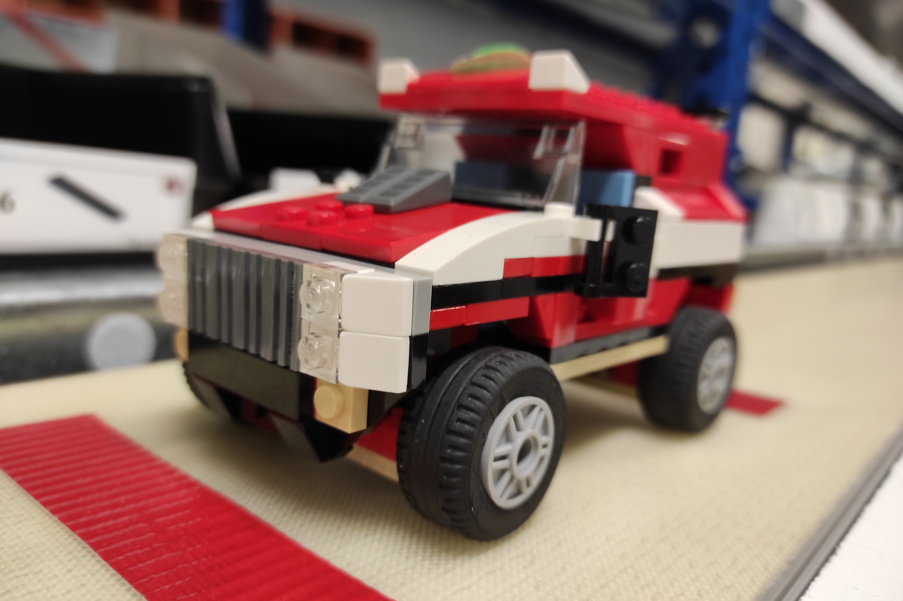
Each participant completes the same task sequence with one of four different Instructional Media Treatments (IMTs). Each IMT offers a different level of augmented instruction, ranging from traditional paper instructions with no augmentation to a mixed reality head-mounted display where interactive instructions are superimposed on their field of view.
Instructional design for all augmented IMTs was based on the paper work instructions, adapted only as needed to leverage the specific affordances of each technology. This helped ensure that any differences observed in the study were due to the augmentation level of each IMT, not variations in instructional content.
The remainder of this chapter will describe in detail all aspects of the study’s methodology, including participant recruitment, human subjects considerations, experimental design, data collection, and analysis. The chapter will conclude by considering the limitations of this study.
4.2 Study Design
In this section, we will provide a detailed description of the study design. We will begin by discussing the task and the authentic manufacturing environment in which the experiments are situated. Next, each of the four treatment levels are described. Finally, the affordance-based nature of this design will be detailed, wherein the underlying affordances are identified for each treatment and inherent tradeoffs are described.
4.2.1 Task and Context
The Lean Lab assembly line consists of two manufacturing cells followed by a conveyor with five additional stations. Each manufacturing cell consists of five workstations arranged in a U-shape. Each participant is tasked with the operation of one of 15 workstations involved in the SUV assembly.
The experiment is run at ST-8, which is located in the middle of the second manufacturing cell, flanked on either side by workstations six through ten. This arrangement is pictured in Figure 4.2.
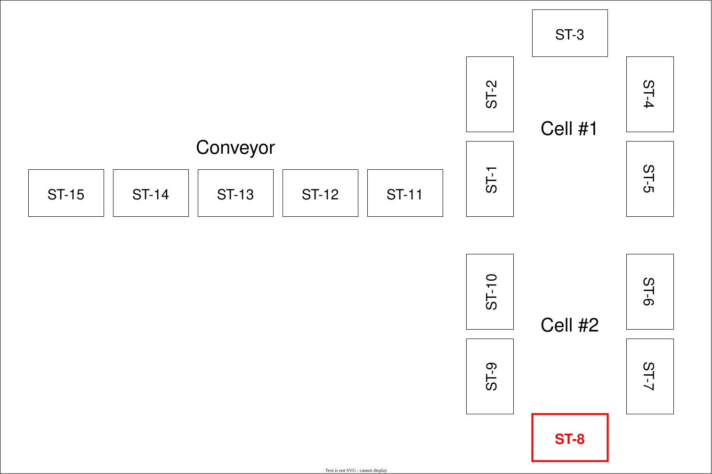
All workstations in both cells are similarly equipped with work surface and trays for parts bins. Work instructions for both car models normally produced on the line are displayed above the bins. The bins are removable to facilitate part resupply, but their arrangement at each station is standardized and specified on the work instructions. Figure 4.3 shows ST-8 and its bin layout.
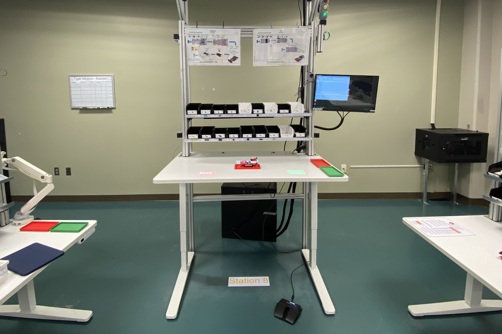
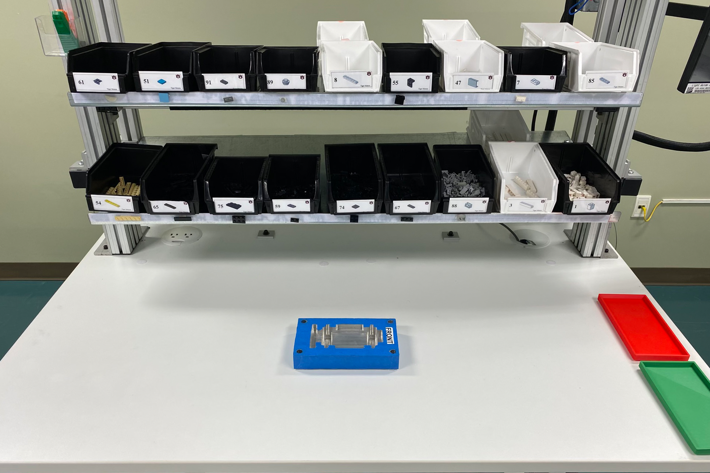
The green and red trays pictured on the right of the work surface are for finished goods and rework, respectively. The central fixture provides for standard placement and secure retention of the workpiece. All of these are removable to allow the lab to operate with varying levels of Lean practice in effect.
4.2.2 Treatment Levels
As described in Section 4.6.4, each participant in this between-groups design is randomly assigned to a single level of the Instructional Media Type (IMT) treatment. There are four levels of this treatment, each with increasingly augmented work instructions: (1) traditional paper work instructions, (2) projected augmented reality, (3) head-mounted optical see-through augmented reality, and (4) head-mounted optical see-through mixed reality. All are detailed in the sections that follow.
4.2.2.1 Paper Work Instructions
Paper work instructions (PWI) are printed instructions traditionally used in manufacturing assembly processes. Unlike all other IMTs in this study, PWIs are inherently static and do not adapt to the operator in any fashion.
The process at workstation eight (ST-8) is a three step sequence in which 16 pieces, consisting of eight different part types, are affixed to the workpiece. The PWIs for this process are pictured in Figure 4.4.
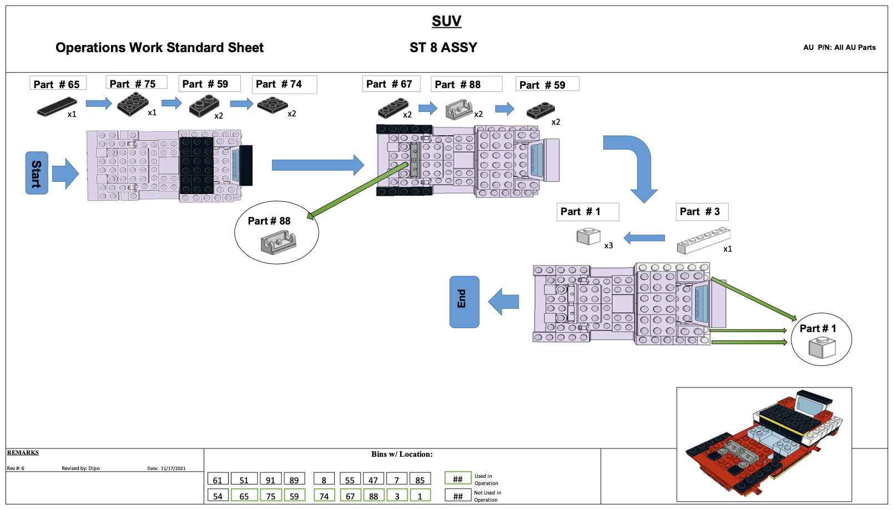
The instructions consist of one top-down view of the workpiece for each step, plus an isometric view of the ST-8 assembly. In each step, the car’s prior state is shown in grey and new parts have the correct color. A sequence of parts is shown for each step, with the unique part number and quantity required. It is up to the operator to discern the correct placement of those parts from the diagram. Additional detail views are incorporated to each PWI where more clarity or detail are required. At the bottom center of each PWI a map of the workstation’s parts bins depicts which are used in the task.
Manufacturing simulations in the Lean Lab are expected to run at a takt time2 of one minute. Therefore, the instructions for each of the 15 workstations have been carefully designed to include one minute of work content.
While it may seem trivial to complete the work at ST-8 correctly in one minute or less, experience shows that is not the case. The Lean Manufacturing Systems class at Auburn University (INSY 5800/6800), has validated these instructions through countless lab sessions in the administration of that course. They served as the basis for the design of all other IMTs, and as the control for this study.
4.2.2.2 Projected AR
Projected AR (PAR) systems integrate work and instruction by projecting the latter onto the work surface. Work steps are displayed sequentially, either under operator control or automatically triggered.
ST-8 is equipped with a PAR system by LightGuide3 (LG), a Michigan-based company focused on innovative, AR-based manufacturing solutions. As shown in Figure 4.5, Their system uses a Windows PC, industrial-grade projector, and 2D or 3D vision system, along with other optional input devices and tools. All components are commercially available and integrated by the LG software, where digital work instructions are both authored and played back.
Note that the Lean Lab’s LightGuide system predates this study. Its specification, installation, setup, and configuration, along with the design and implementation of the instructional materials it uses at ST-8, were conducted by prior teams.
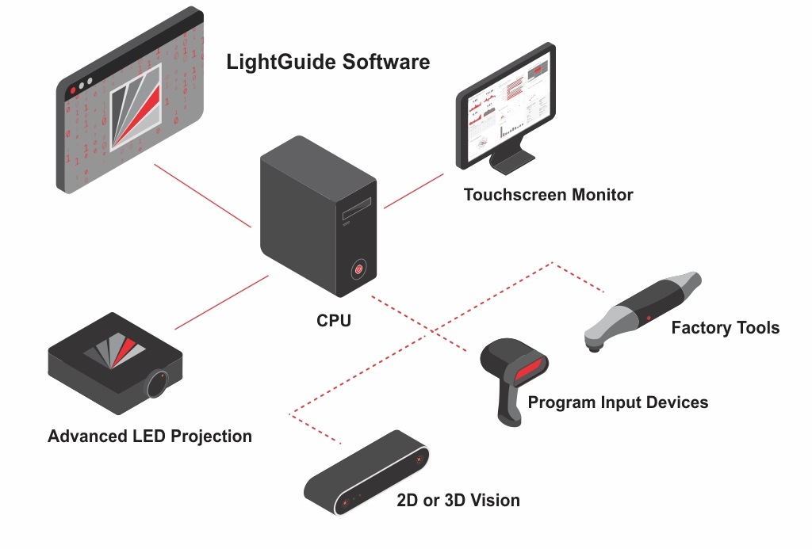
The system at ST-8 uses a video projector and depth-sensing camera mounted above the paper work instructions. The output of a PC running Windows 10 and LightGuide software is displayed on a monitor conveniently situated to the right of the bin trays. All equipment, except the PC itself, is mounted on a robust structure of extruded aluminum components from 80/204 to ensure operator safety, consistent alignment, and stability. A foot-operated switch provides an alternative to gesture-based control of the system, but it was not used in our study. The complete installation is shown in Figure 4.6, with each component labeled.
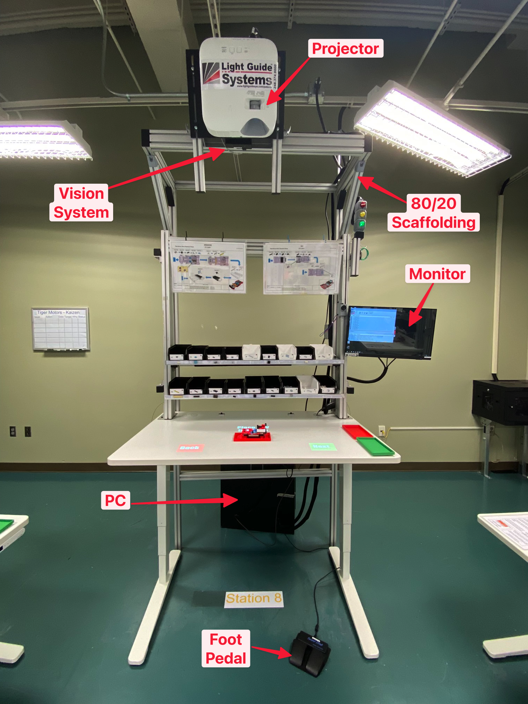
To create a consistent user interface across all XR treatments, this study leveraged the LG’s vision-based system for operator control. In this mode, an infrared time-of-flight camera provides a real-time depth map of the work area. This 2D video signal encodes the distance of objects from the camera as a color value at each pixel. That output, commonly known as a depth map, is processed using computer vision techniques to detect motion and identify any obstructions in the workspace. Figure 4.7 demonstrates the output of this system in a simulated operator interaction.
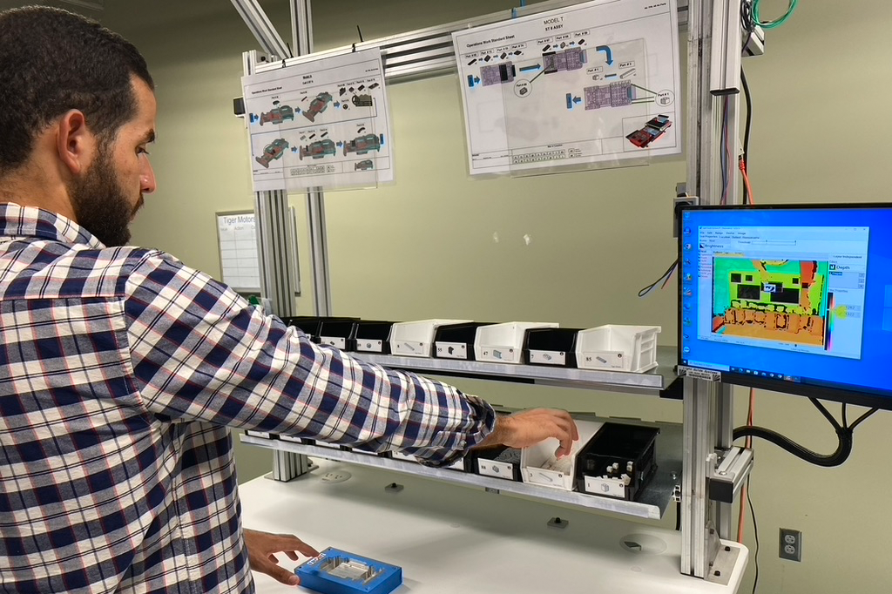
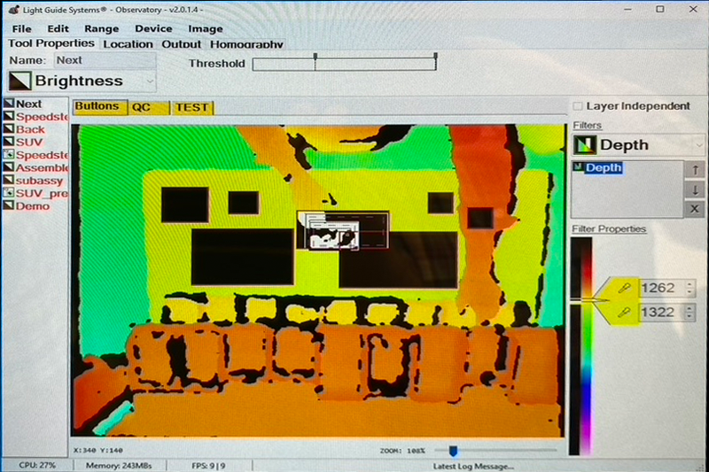
With this information the LG can, for example, recognize the operator’s hand placement and trigger system actions, warnings, or data logging events. In the ST-8 implementation, some applications of this method include triggering a green or red overlay when the operator reached into the right or wrong part bin, advancing to the next assembly step when the operator swipes over the virtual NEXT button, and automatically advancing when it appeared that the operator had installed a piece.
The images below were grabbed from PAR trial recordings. Figure 4.8 (a) shows a side view of the workspace and Figure 4.8 (b) shows the same moment from the operator’s perspective. Both images are cropped to focus on the work surface, but the operator view maintained the original aspect ratio with minimal cropping.
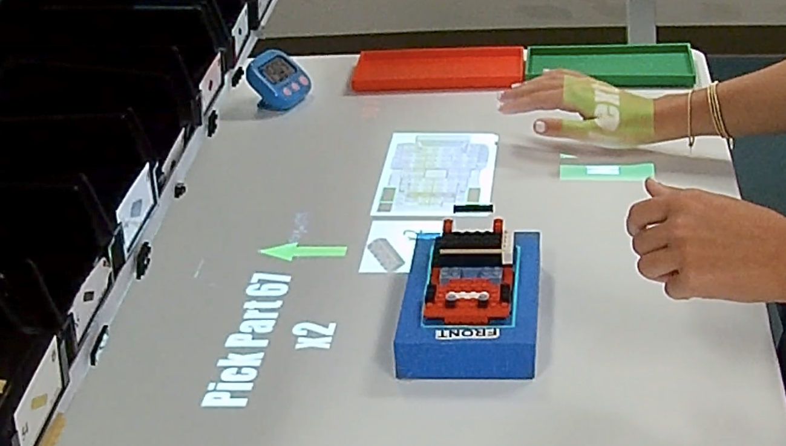
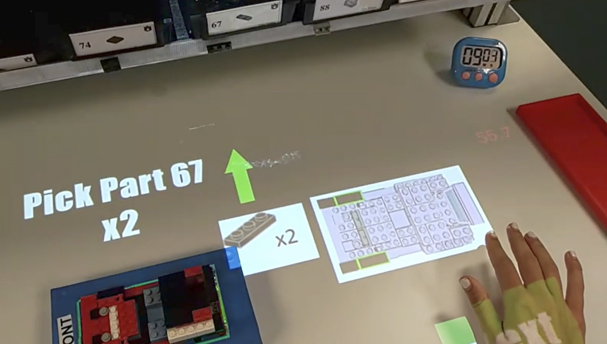
The PAR instructions were designed and implemented by students and graduate assistants in the Lean Manufacturing class. They were adapted from the same PWIs used as the control in this experiment. Like the PWIs, the PAR system has been validated through extensive use in the lab.
4.2.2.3 Head-Mounted AR
Like PAR, head-mounted AR (HMDAR) systems integrate dynamic instructions into the work area. Whereas PAR relies on traditional projectors and classical computer vision techniques, HMDAR employs sophisticated displays and fused sensor data to superimpose instructions and virtual controls directly into the operator’s field of view, properly aligned with the work area.
As detailed in the subsequent section on System Development, Microsoft’s HoloLens25 (HL2) was used for this treatment. The HL2’s area-based tracking capabilities were used to align the virtual and physical coordinate systems, enabling the proper in-view placement of UI objects, independent of the position and orientation of the operator’s head. As with the PAR treatment, user motion was the only input modality, implemented via the HL2’s more sophisticated hand tracking and gesture recognition systems. Figure 4.9 shows the side and operator view of this treatment at the same moment.
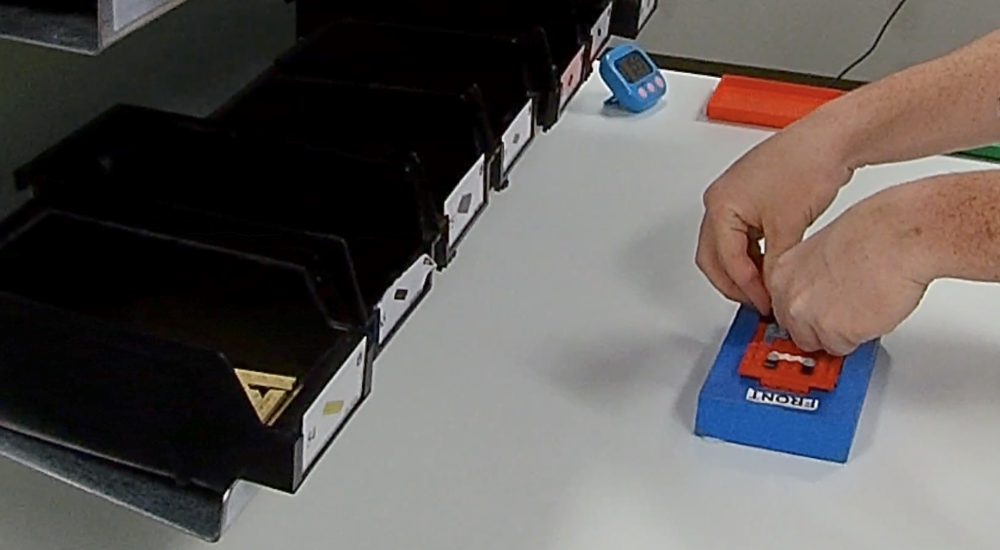
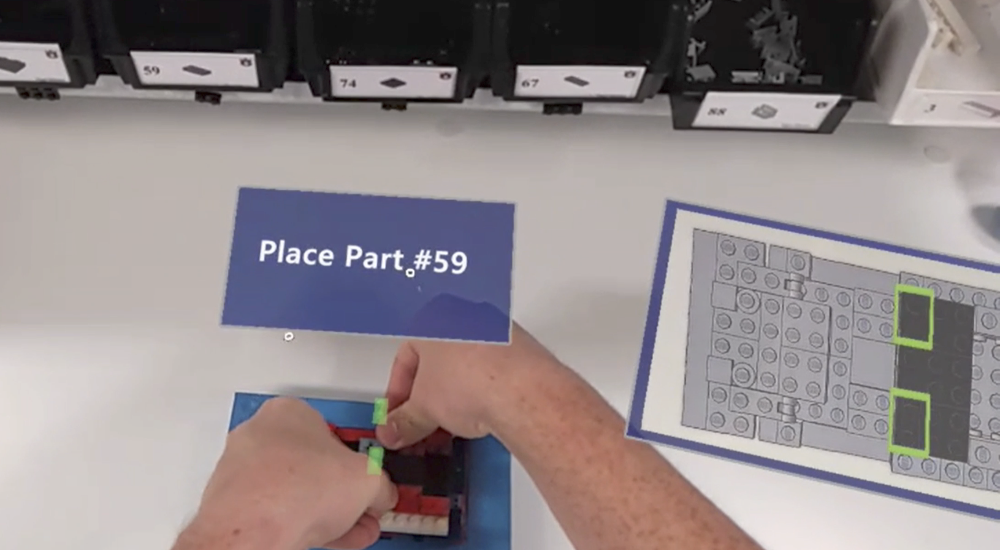
The instructional content for this treatment was intentionally designed to mirror that of the PAR system. By controlling for variables such as instructional content and task complexity, the study design allows for a direct comparison based on the distinct affordances of each technology—namely, the nature of their display and interface. This approach ensures that differences in operator experience and performance can be attributed most directly to the technological medium.
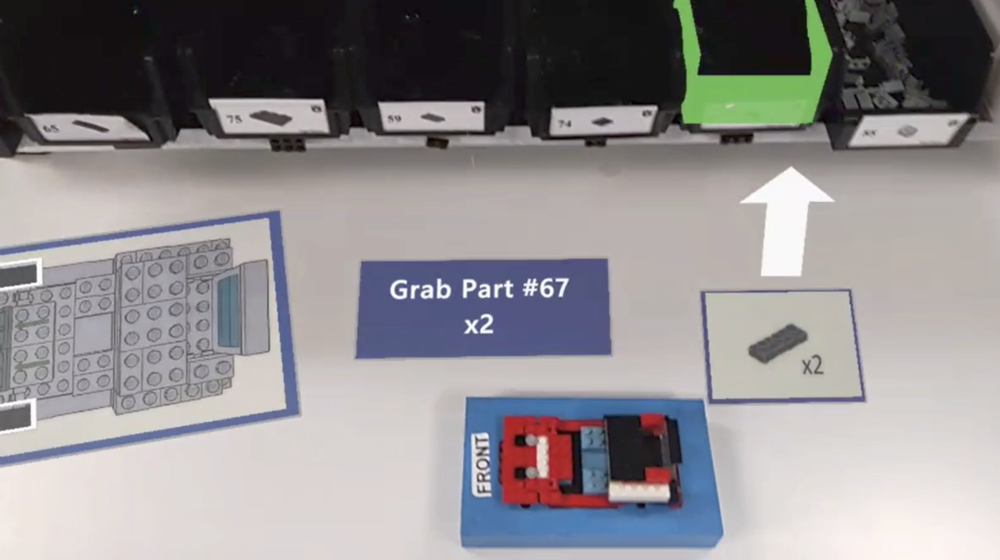
For comparison purposes, Figure 4.10 shows the HMDAR operator’s view of the same instructions pictured in Figure 4.8 for the PAR treatment. The two differ only in that the digital work instruction is placed on the operator’s left in the HMDAR version to prevent overlap.
4.2.2.4 Head Mounted MR
Head-mounted MR (HMDMR) extends the capabilities of the HMDAR treatment with a more sophisticated tracking method that allows for more natural interactions with the workpiece. For all other treatments, the workpiece remains in a fixture, forcing the operator to align themselves, both physically and mentally, to its placement.
HMDMR eliminates the need for a fixture and allows the operator to rotate and/or lift the work off the surface if it seemed natural to them to do so. It achieves this by incorporating model-based tracking to align instructions with the workpiece itself. The added flexibility was expected to make the process more intuitive and ergonomic, enhancing operator performance.
Using model-based tracking, part placement indicators remain properly aligned with the workpiece, regardless of its position and orientation in space. This is demonstrated in Figure 4.11, where participant #1040 has rotated the workpiece approximately 45 degrees from its normal orientation to facilitate the installation of parts at the rear of the model. Note that the green part proxies and white placement arrows, all virtual, remain properly oriented.
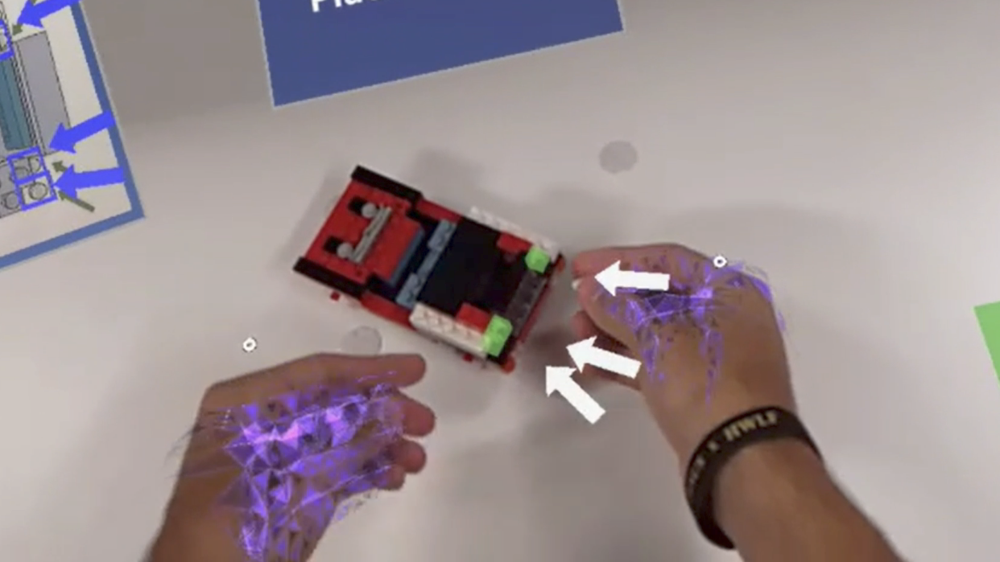
Figure 4.12 provides a side and operator view of this treatment, and illustrates the lack of a fixture. Otherwise, the HMDMR treatment was unchanged from the HMDAR, allowing for direct comparisons of all treatments based only on the affordances of interest.
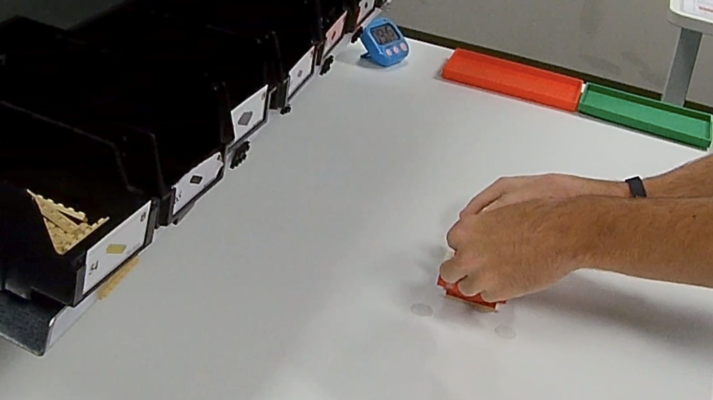
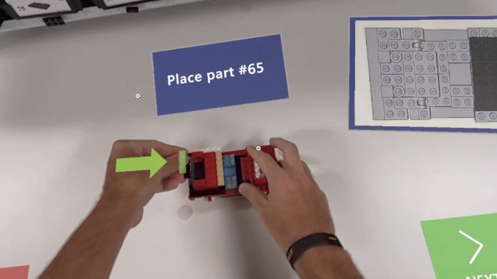
4.2.3 Affordances and Theoretical Benefits
| Affordance | PWI | PAR | HMDAR | HMDMR |
|---|---|---|---|---|
| Task Instructions | Y | Y | Y | Y |
| Hands-On Engagement | Y | Y | Y | Y |
| Direct View of Work | Y | Y | Y | Y |
| Freedom of Movement | Y | Y | Y | Y |
| Step-Wise Guidance | Y | Y | Y | |
| Feedback Mechanisms | Y | Y | Y | |
| Workspace Integration | Y | Y | Y | |
| Sensor-Based Interaction | Y | Y | Y | |
| User-Centric Display | Y | Y | ||
| Freeform Interaction | Y |
Table 4.1 maps each treatment to its set of affordances. It demonstrates a progression of complexity and sophistication. “Task Instructions,” “Hands-On Engagement,” and “Direct View of Work” provide the baseline capabilities for all treatments. Additional affordances add layers of instructional complexity and interactivity.
While it may be tempting to make a-priori claims about the most influential affordances or theories in this context, the relationships are not so clear-cut. Each identified affordance can claim some benefit from most identified theories; all are interrelated and contribute to the overall learning experience.
Instead, this work hypothesizes that treatments leveraging more affordances will result in better learning outcomes. But the success of these treatments also depends on the quality of their implementation and the balance between enhanced functionality and added complexity. The latter may have a negative impact on the overall user experience, increasing cognitive load, breaking flow, and otherwise offsetting the intended gains. Finally, the interplay between different affordances — how they complement or interfere with one another — is also a significant consideration.
4.2.4 Tradeoff
Both HMD treatments were designed to resemble the PAR, and, by extension, PWI experiences as closely as possible. This choice was made to deliberately control for the instructional design and focus treatment differences on the benefit of underlying affordances. While any of the treatments could have been “improved” with additional system-specific functionality, that would have been detrimental to the experimental design. For example, obvious shortcomings of the PWI could have been corrected, or participants could have been given the option to use the PAR’s footswitch. Either would likely have improved the results for those treatments but led to less relevant comparisons. This methodology acknowledges the potential limits to each treatment’s efficacy, but upholds the integrity and clarity of the study’s comparative analysis.
4.3 Measures and Variables
In this study, we evaluate the efficacy of different instructional methods in manufacturing assembly training, focusing on key variables that impact learning, recall, and retention. This section outlines these crucial variables, alongside a comprehensive set of hypotheses for both primary and secondary outcomes, ensuring a robust and systematic assessment of each instructional treatment’s effectiveness.
4.3.1 Dependent Variables
The phenomena of interest in this study are learning, recall, and retention. This section will define each before discussing how they are operationalized through observed and calculated measures.
4.3.1.1 Constructs
Learning, recall, and retention are the outcomes of interest in this study. They were chosen for two reasons: (1) they are commonly used in related studies, and (2) they are supported by research in cognitive and educational psychology. But learning, recall, and retention are all psychological constructs; abstract concepts or ideas used to explain a phenomenon or behavior (Braun et al., 2001). They are fundamental to the research questions, but not directly observable, and therefore must be inferred from behaviors, actions, or outcomes.
Learning is the process through which knowledge, skills, behaviors, or values are acquired or modified (Bloom, 1956). In manufacturing assembly, learning encompasses not just understanding the theoretical aspects of an assembly process but also acquiring the practical skills to execute tasks efficiently and accurately.
Recall refers to the ability to access information from memory without being re-exposed to it after initial training. Recall is especially relevant in manufacturing settings where operators often need to perform tasks without step-by-step guidance, relying on their memory of the training.
Retention is the ability to maintain information, skills, or knowledge over time. In manufacturing, where precision and consistency are vital, an operator’s retention can significantly impact production quality and efficiency.
Each of these constructs are a function of how effectively the instructional process encodes and stores knowledge and skills in long-term memory. These claims are supported by established theories in cognitive psychology, including the Information Processing Theory, which seeks to explain how humans process, encode, and retrieve information (Atkinson & Shiffrin, 1968). It is also supported by Ebbinghaus (Ebbinghaus, 2013) and works that followed. Originally published in 1885, Ebbinghaus first demonstrated that memories decay over time without reinforcement or repetition. Additionally, research in educational psychology, particularly studies on effective instructional strategies and their impact on long-term skill acquisition and knowledge retention, provide empirical backing to these concepts.
The focus on learning is justified as it provides insights into how different instructional methods (traditional vs. augmented) influence the speed and depth with which participants master new tasks. This aligns with cognitive load theory, which posits that reducing extraneous cognitive load and optimizing intrinsic and germane loads can enhance learning efficiency. The emphasis on recall is supported by active learning theories, which suggest that engaging, hands-on experiences (as facilitated by augmented reality technologies) can lead to more durable learning. Retention ties back to the experiential and constructivist learning theories, which argue that knowledge constructed actively by the learner is more likely to be retained over time. Furthermore, retention data can inform training protocols, indicating when refreshers or additional training may be needed to maintain proficiency.
4.3.1.2 Observed Measures
As constructs, learning, recall, and retention cannot be directly measured. For this study, they are operationalized through a variety of commonly-used measures. Learning is measured by how quickly a participant progresses towards the level of proficiency expected of a qualified operator. Specifically, it is a function of the dependent variables quality (uncorrected error count and type) and performance (task completion time). It can also be measured by the participant’s reliance on PWI consultation (PWI count and duration) during the second experiment. Recall is assessed by how well participants can perform the task after the learning phase, without additional instructional support. This can be observed through the same quality and performance measures as learning. Finally, retention is measured by re-testing recall some time after the initial training, without further exposure to the task or instructional materials.
4.3.1.3 Calculated Measures
Each of the identified constructs can also be assessed using a variety of calculated measures, including Learning Rate (LR), Transfer Effectiveness Ratio (TER), and Overall Equipment Effectiveness (OEE). LR is a measure of the rate of change of learning and can be calculated in a number of ways. TER quantifies the value of time spent training (Kaplan et al., 2021; Roscoe, 1971), based on the amount of time required to reach certain training outcomes with (\(Y_c\)) and without (\(Y_x\)) augmentation, as seen in Equation 4.1.
\[\textstyle{TER = \frac{Y_c - Y_x}{Y_c} \times 100} \tag{4.1}\]
OEE has emerged as a fundamental and widely accepted KPI in manufacturing (Ng Corrales et al., 2020). Introduced by Seiichi Nakajima (1988) as part of Total Productive Maintenance (TPM), OEE evaluates overall manufacturing performance as the product of system availability, productivity, and quality, as shown in Equation 4.2. It is instrumental in pinpointing areas for improvement in equipment utilization and production processes.
\[\textstyle{OEE = Availability \times Productivity \times Quality} \tag{4.2}\]
These three values are the percentage of measured vs expected speed, yield, and up-time, respectively. As seen in Equation 4.3, productivity is simply the number of units produced multiplied by the takt time, divided by the operating time. Completed units includes those with errors, but not those retired by the operator.
\[\textstyle{Productivity = \frac{UnitsProduced \times TaktTime}{OperatingTime}} \tag{4.3}\]
Quality is the number of units produced less the number with errors, divided by number produced. This intuitive calculation is shown in Equation 4.4. Once again, retired units are not included in these counts.
\[\textstyle{Quality = \frac{UnitsProduced - DefectiveUnits}{UnitsProdcued}} \tag{4.4}\]
OEE’s third and final component, availability, is commonly calculated by dividing the amount of time that the system was operational (aka measured up-time) by the scheduled time. This is shown in Equation 4.5.
\[\textstyle{Availability = \frac{UpTime}{ScheduledTime}} \tag{4.5}\]
In the context of this study, availability is out of the participant’s control, but, as discussed elsewhere, can manifest in some system related issues that were encountered. Where appropriate, we will calculate availability by deducting time lost to system issues from the available time.
4.3.1.4 Integration
Together, these constructs and measures support the comprehensive analysis of the effects of augmented instruction in manufacturing assembly training. Together with workload and usability data, and qualitative feedback collected, we aim to provide a more complete picture of the roles that human factors, instructional design, and system performance have in achieving optimal results for skill acquisition, knowledge retention, and long-term performance.
4.3.2 Independent Variables
The primary independent variable in this study is the treatment level assigned to each participant. Of the four treatments, three serve as interventions: PAR, HDMAR, and HMDMR. The fourth treatment, PWI, is the standard for manufacturing assembly training and therefore a natural choice for the control.
Post-hoc analysis is conducted to determine if any of the participant demographics should be considered secondary independent variables. Those of particular interest include age and prior experience with LEGO or manufacturing. The results of this analysis may have implications for the generalizability of the study.
4.3.3 Controlled Factors
To ensure the validity of the outcomes, the study design carefully controlled for various factors, isolating the impact of the treatments.
- Participant Sampling: The recruitment strategy aimed for a diverse and representative sample within the constraints of the study’s target population.
- Random Treatment Assignment: This method was utilized to evenly distribute potential confounding variables across the different treatment groups, thereby minimizing biases.
- Uniform Device Usage: All participants wore the HL2 during the learning and recall experiments to standardize any potential impact of using the device.
- Screening for Prior Experience: Prospective participants were screened and excluded if they had prior experience with similar AR/MR devices or Lean Lab assembly tasks.
- Task Consistency: The content, complexity, and duration of the task were uniform for all participants, ensuring that any learning differences were attributable to the treatments rather than task variability.
- Standardized Session Conduct: The environment and methodology of conducting each session were kept consistent, further ensuring that differences in outcomes were treatment-related.
These control measures were integral to maintaining the integrity of the study and ensuring that the results accurately reflect the effects of the instructional treatments.
4.3.4 Primary Outcomes
The primary outcomes of this study are the results of the hypotheses tests for each phase, as outlined below.
4.3.4.1 Learning Phase Hypotheses
The first group of hypotheses are designed to test the effect of each treatment on training outcomes.
H1: Learning
How does each IMT affect performance during the learning phase?
\[H_{1a}\textrm{: Average time per car varies with treatment}\] \[H_{1b}\textrm{: Learning rates vary with treatment}\] \[H_{1c}\textrm{: Average error count per car varies with treatment}\]
To better understand those results, additional analysis considers the treatment effect on error types, task completion rate, and first-task performance. Finally, treatment groups are investigated to determine which had the highest percentage of “qualified operators” at the end of the 10-min session. This is assessed relative to expected performance metrics, including OEE and takt time.
This approach provides a robust assessment of the instructional treatments’ effectiveness during the learning phase. It examines key performance metrics—efficiency, accuracy, and learning progression—to capture a comprehensive understanding of participant performance. The evaluation against real-world manufacturing standards further ensures the study’s relevance to practical training contexts. This design allows for a nuanced interpretation of how each treatment influences learning outcomes in manufacturing assembly training.
4.3.4.2 Recall Phase Hypotheses
The second group of hypotheses aim to evaluate the residual impact of each treatment on recall — specifically, participants’ ability to correctly replicate the task without further training.
H2: Recall
How does each IMT affect performance during the recall phase?
\[H_{2a}\textrm{: OEE varies with treatment}\] \[H_{2b}\textrm{: PWI reliance varies with treatment}\]
In contrast with the RQ1 analyses, which focused on the learning progress, these hypotheses are designed to assess the training effectiveness. OEE was chosen as the primary measure due to its practical relevance in answering “Did the training work?” It concisely quantifies the participants’ ability to utilize acquired skills under conditions that mimic real-world expectations, where both speed and accuracy are crucial. For the purpose of this analysis, reliance will be measured by the number of times a participant refers to the printed instructions, and the duration of each.
Subsequent analyses will investigate the primary drivers of OEE (efficiency vs. quality) and PWI reference duration (frequency and length of references). Additional exploration into error types, task completion rate, first-task performance, and ongoing learning rate may also provide additional insight into the nuances of recall performance across treatment types.
4.3.4.3 Retention Phase Hypotheses
Phase three of the study is designed to assess the residual impact of each treatment on retention. This describes the durability of the learning and is measured by testing recall several weeks post-intervention. No additional training is provided in the meantime.
H3: Retention
How does each IMT affect retention, as measured by the change in performance between recall and retention?
\[H_{3a}\textrm{: Change in TCT varies with treatment}\]
\[H_{3b}\textrm{: Change in UCE varies with treatment}\]
Here the analysis focuses on the change in operator performance since the recall experiment. Performance is expected to degrade for all treatments, but the primary question is whether the magnitude of that change varies by instructional method. This retention analysis was originally framed in terms of OEE, but the single-trial retention design made binary pass/fail quality measures too unstable for reliable interpretation. Consequently, the final analysis evaluates changes in task completion time and uncorrected error count instead.
Given the limited data available from the retention phase (only one replication per volunteer participant), and the variable delay between experiments, these results will be treated as exploratory. While they may not be conclusive, these findings can help illuminate underlying patterns in treatment effects.
4.3.5 Secondary Outcomes
The study design supports several other areas for statistical, exploratory, and qualitative analysis. A variety of secondary outcomes, each described in the sections that follow, are incorporated to provide better context for and understanding of the primary outcomes.
4.3.5.1 Statistical
A variety of additional statistical tests were performed, involving workload, usability, demographics, and performance variability. Specifically, we plan to investigate the following relationships:
- TLX composite score (workload) and performance across treatments.
- SUS composite score (usability) and performance across treatments.
- Demographics (e.g., age, prior experience) and performance across treatments.
- Within-group performance variance
4.3.5.2 Exploratory
In addition to commonly used descriptive statistics and visualization methods, this study employed a variety of other statistical methods to explore second level effects.
- The TLX components (e.g., mental workload, frustration) with the greatest influence on performance.
- The relationship between workload, usability, treatment, and their interactions on performance.
- Factors influencing within-group performance variance during the recall phase.
4.3.5.3 Qualitative
Qualitative feedback from participants is an essential complement to the other findings. Through thematic analysis, we aim to systematically identify and interpret patterns in comments gathered during exit interviews and other interactions throughout the study. These insights are crucial for integrating and enriching our findings beyond what quantitative data alone can reveal.
4.4 Experiments
This study is organized into two sessions, encompassing three distinct experiments, each aimed at evaluating one of the three measures of training effectiveness described above. This section details the methods, variables, and rationale behind the design of each experiment. For a step-by-step description of the conduct of each session, see Section 4.8 and Section 4.9.
4.4.1 Surveys and Instruments
Two surveys and three instruments were completed during the course of this study, all during the first session. Each is described below, and copies are included in the IRB approval forms.
4.4.1.1 Participant Intake Form
The Participant Intake Form (PIF) is a survey designed to gather information, essential to understanding the participant demographic makeup, assessing the generalizability of the study, identifying potential confounding factors, and facilitating post-hoc analyses involving matching or grouping:
- General demographics, including gender, age, height, race, ethnicity, country of origin, primary language, education level, and student status.
- The presence of color blindness.
- The need for corrective lenses, and whether they will be used during the experiment.
- Any other condition that might affect their performance during the study.
- Self-rated experience with LEGO building and background in manufacturing.
- The method by which they learned about the study.
4.4.1.2 General Feedback Sheet
This simple form is used to record each participant’s qualitative feedback on their overall experience. It is administered by the PI in a very open-ended manner. A list of standard questions is available for participants that aren’t forthcoming or otherwise benefit from prompting. It is only used at the end of the first session.
4.4.1.3 NASA Task Load Index
As discussed in Section 2.13.2.2, the NASA Task Load Index (TLX, Hart, 2006) was designed to assess the perceived workload of a task. The primary outcome of the TLX is a weighted average of six factors that contribute to overall workload. Three of those factors are related to the mental, physical, and temporal demands placed on the participant by a task. The remaining three measure the participant’s perceived effort, frustration, and performance during it.
The TLX is comprised of weighting and scoring processes that are repeated by participants upon task completion. First, to account for the subjective nature of workload, each factor is weighted by the participant. This Sources of Workload Evaluation is accomplished by having them indicate which element of each pair made the greatest contribution to their perceived workload. This is illustrated in Figure 4.13. For example, given the pair “Mental Demand or Effort,” a participant would likely indicate effort for a task like lawn work, but mental demand for a philosophical debate. This is repeated for all fifteen possible combinations of the six factors.
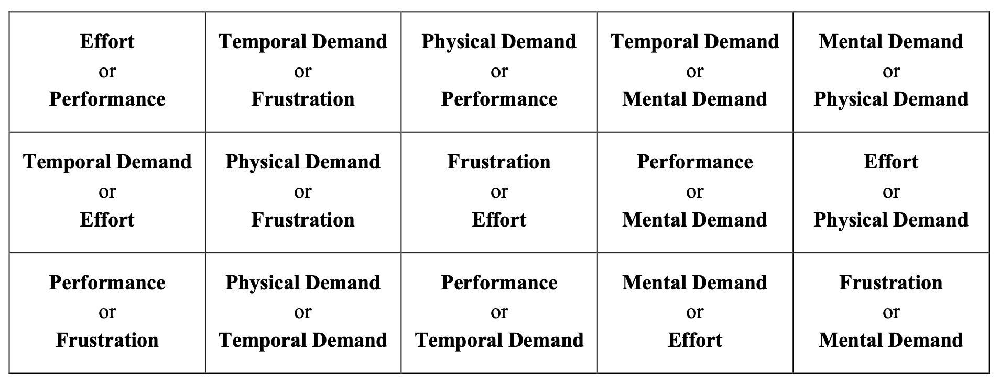
Next, participants complete the Workload Rating Scales form to assess the magnitude of each factor for the given task. This uses a Likert-like (Likert, 1932) scale with 20 equal intervals and bipolar descriptors. No numeric values are given and participants are instructed to mark it freely. The mental demand rating scale shown in Figure 4.14 is representative.
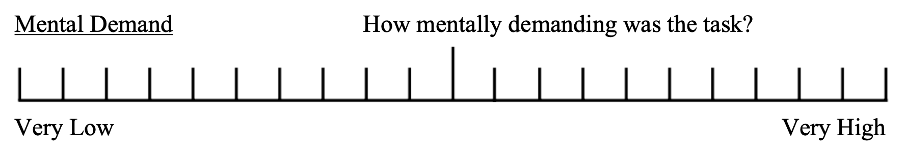
The results of the TLX are expected to provide insight into the overall user experience for each treatment, along with how workload varies across treatments and what underlying factors contribute to both. This will aid in contextualizing the positive or negative influence that workload might have on learning outcomes.
4.4.1.4 System Usability Scale (SUS)
As discussed in Section 2.13.2.2, the System Usability Scale is a widely used instrument designed to quickly and reliably assess the overall usability of a product or service. The SUS is composed of 10 questions that participants respond to according to their experience with the system. Each is ranked on a five point scale anchored by “Strongly Agree” and “Strongly Disagree” bipolar descriptors. Note that alternating items are reverse-scored to improve validity. A portion of the form used is shown in Figure 4.15.
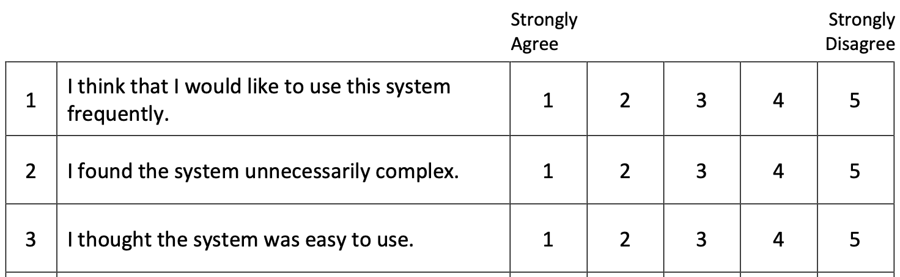
The SUS score is calculated by summing the scores of each question. For odd-numbered questions, the formula is the response value minus one; for even-numbered questions, it is five minus the response value. The total is then multiplied by 2.5:
\[\textstyle{S = 2.5 \times \left( \sum_{i \text{, odd}} (R_i - 1) + \sum_{i \text{, even}} (5 - R_i) \right)} \tag{4.6}\]
where \(R_i\) represents the response to each of the ten items. The SUS score, \(S\), calculated by Equation 4.6 will range from zero to 100. Values above 68 are generally understood to represent above-average usability.
4.4.1.5 Behavioral Control Survey
The final instrument completed during the intake process was the Adult ADHD Self-Report Scale (ASRSv1.1, Green et al., 2019). Referred to simply as a Behavioral Control Survey (BCS) to avoid the possibility of biasing participant responses, the data collected are the focus of a separate study (Ballard et al., 2024), and not further discussed in this work.
4.4.2 First Session - Learning and Recall
The first session of the study tested its primary research questions in two phases, as described below.
4.4.2.1 Learning Phase
Phase one, Learning, compared the effects of the assigned treatment on the speed and accuracy with which participants performed each repetition of the task. Speed was measured as task completion time, while the number and type of uncorrected errors were used to represent accuracy. These measures, tracked for each assembly during the 10-minute session, were later used to assess both the learning rate and depth of skill acquisition. This approach offers insights into how efficiently and effectively each treatment imparts necessary skills and knowledge for the task.
Participants were instructed to focus on three priorities during the first phase: (1) learn the steps of the assembly process, (2) complete each assembly correctly, and (3) finish as many assemblies as possible in the time allowed. This approach of prioritizing correct and efficient work is in line with measures observed and the principles of OEE, which is used in the second and third phases of this study.6
The fixed duration of 10-minutes was deliberately chosen to align with various aspects of the learning process and the operational context of the task. In addition to the OEE considerations outlined above, using a fixed duration ensured that all participants have the same opportunity to learn the procedure. A fixed car count approach (e.g., “make 6 cars”) was rejected due to concerns that the absence of a time constraint could lead to uneven learning opportunities and extend session lengths beyond practical limits.
A 10-minute timeline was chosen based on prior experience with learning curves for the task. The Lean Lab is designed around a 60-second takt time, which constrains the work content for experienced operators at each station. Before training, the time to complete these tasks varies widely. Our expectation was that participants would typically complete between three and six cars during their 10-minute session, but any individual participant might complete only one or as many as ten cars.
4.4.2.2 Recall Phase
The second phase was designed to assess the residual effects of the instructional treatment on each participant’s ability to perform the task correctly and efficiently. The assembly task was repeated four times in the control condition, and the same measures were recorded.
Participants were given three priorities: (1) deliver error-free results, (2) reference the work instructions only if necessary, and (3) work quickly. This emphasized working from memory with expectations appropriate for an operator in training. Although participants were encouraged to work quickly, no time limit was set to ensure each produced four complete assemblies.
4.4.2.3 First Session Data Collection
Manual data collection was limited during the learning and recall experiments. Each assembly was reviewed for correctness and the number and types of uncorrected errors were recorded on the appropriate data sheet. For incomplete (time expired) or retired (breakage requiring rework) assemblies, the final part count was also recorded.
The majority of the data was collected from photographs and video recordings. For each participant, both experiments were recorded on a pair of cameras. One, integrated into the HL2, provided a clear view of the process from the participant’s perspective. The other camera was positioned and oriented to record the entire work area from the operator’s left, as seen in Figure 4.16.
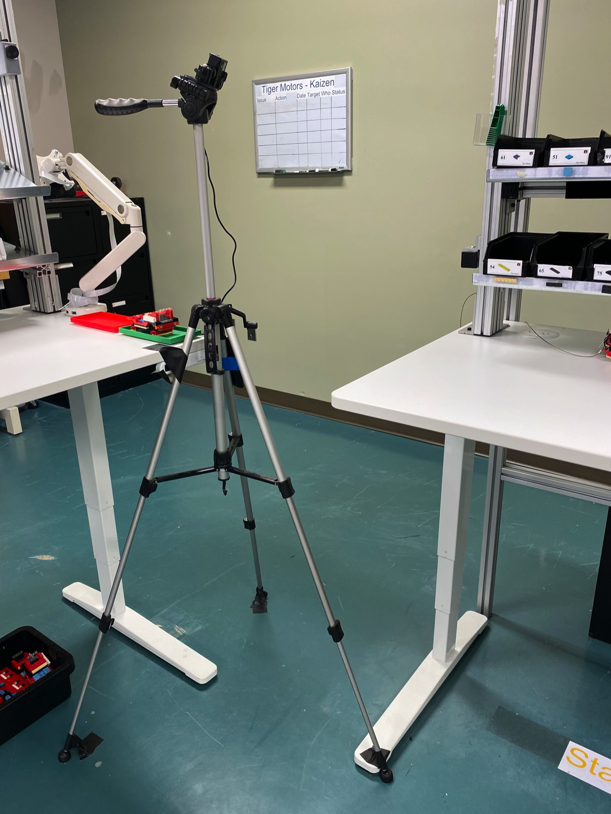
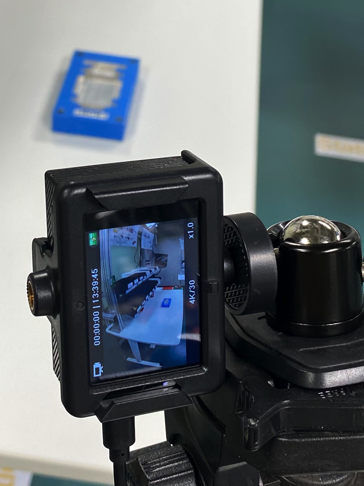
Photos were also taken to provide a detailed, high-quality record of the results for each experiment, complementing the video data. This is exemplified by Figure 4.17, which shows that participant #1053 completed three cars in the learning phase. The 4th car pictured here is rotated to indicate that it was incomplete or retired when time expired. Laminated treatment slates are included in these photos to easily embed essential metadata.
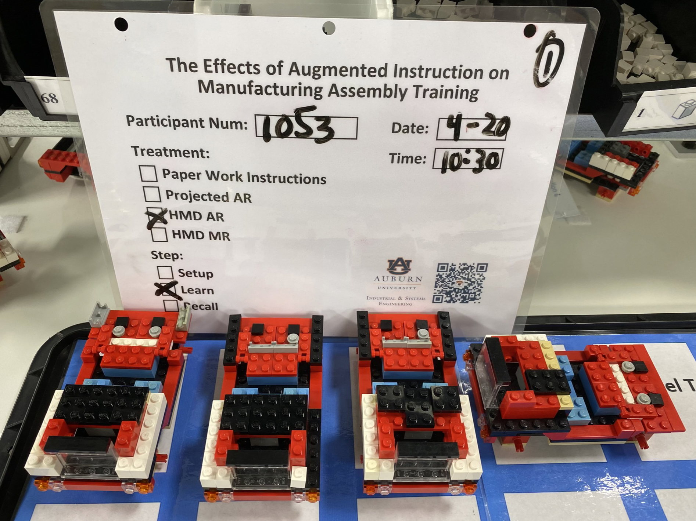
Subsequent analyses, as detailed in Section 4.12, confirmed the original results and extracted additional data related to timing, error type, PWI usage during recall, and more. While video review was time consuming, this approach allowed us to focus on administering the experiment correctly and carefully observing the participant without the distraction of data collection. This ultimately improved the accuracy and traceability of the results.
The TLX and SUS instruments were both administered twice during this session, once after each experiment. This gave us workload and usability information for all treatment groups during the learning task and for all participants during recall. The latter could be used as baseline measurements for the ST-8 work content.
The PIF, BCS, and a trial run of the TLX were also administered during the intake process of this session. Finally, during the exit interview, general feedback was collected. All of this is detailed in Section 4.8.
4.4.3 Second Session - Retention
The second session took place in the Lean Lab several weeks after the learning and recall experiments, as part of an end of study event. All prior participants were invited to attend. To address confidentiality concerns that might arise due to the public nature of this event, attendance was entirely voluntary.
Based on the number of trials in the first session, the maximum anticipated turnout during this 4-hour event was 40. That suggested a traffic rate of 10 to 15 participants per hour, implying a conservative maximum duration of 3 minutes per trial. This necessarily limited the scope and complexity of the experiment.
This experiment was designed to assess longer-term benefits of the original intervention. Each participant was asked to build a single car from memory, without additional instruction. They were asked to prioritize (1) completing the assembly correctly and (2) finish within the station takt time of 60 seconds. Task completion time was collected, but a generous 3-minute time limit was imposed in the interest of expediency. Compensation was awarded as described in Section 4.6.2.3.
The interval between the original intervention and this session varied for each participant. This variable time gap, which could range from one to seven weeks, will be a consideration during analysis.
4.4.3.1 Second Session Data Collection
As in the first session, the emphasis was on minimizing the amount of manual data collection required. Each trial was recorded using only a compact forehead-mounted video camera. Task completion time and error count, along with any essential observations, were documented. The completed car was also photographed, ensuring that the timer and notes were visible in the frame.

This single photo approach streamlined data collection during the event without compromising the integrity of the results. While the photos alone provide sufficient data for our primary analysis, the video recordings offer additional detail if desired.
4.5 HMD System Development
In this section, we will explore the key aspects of the system development process. We will discuss the hardware and software considerations and provide an overview of the development timeline, strategies, and tactics employed. Finally, we will highlight the various challenges encountered during the development process, along with the lessons learned and strategies used to overcome these obstacles.
4.5.1 Hardware
Of the HMDAR systems commercially available in 2021, when the precursor to this study began, only the HL2 was well-suited for enterprise applications, including manufacturing. Originally released for that market in 2019, the HL2’s distinguishing features are tabulated in Table 4.2, below.
| Feature | Description |
|---|---|
| Natural Field of View | The HL2 is an optical-see-through system (OST) where its display is overlayed on the user’s normal view of the world. Its optical design provides a wide and minimally obstructed field of view (FOV), giving a natural and safe user experience. The HL2 also can be used with glasses and features a unique, flip-up design that eliminates the device from view. |
| Hands-free use | The HL2 relies entirely on natural inputs - gestures and voice controls - rather than physical input devices like tablets or game-style controllers. This leaves operators free to use their hands for their required tasks. |
| Untethered | The HL2 is a stand alone design with integrated power and compute. This eliminates the need for power or data connections that can encumber users, limit their motion, and introduce tripping hazards. |
| General Purpose | HL2 is a versatile XR device that supports open development across various industries. Its hardware supports image, model, and area tracking methods to allow for a wide range of augmentation. Unlike some devices, the HL2 is not limited to specific applications or development by authorized partners. |
Only the Magic Leap 28 design is similar. However, despite being released nearly three years later, it has a more limited FOV, requires prescription inserts for vision correction, offers less extensive developer support, and has achieved less market adoption than the HL2. Both devices are pictured in Figure 4.18, below.
Because the HL2 represented the state of the art in OST HMD enterprise XR devices when this study commenced, it was adopted for the HMD AR/MR treatments. At the time of this writing, nearly four years after its introduction, the HL2 hardware design and the feature set it enables remain largely unchallenged.
Unlike the LG, the HL2 is entirely self-contained, processing data from an array of sensors to enable six degree-of-freedom visual tracking, spatial mapping, gesture recognition, voice commands, hologram rendering, and optical compositing in real-time. Figure 4.19 provides an exploded view of the HL2 components.
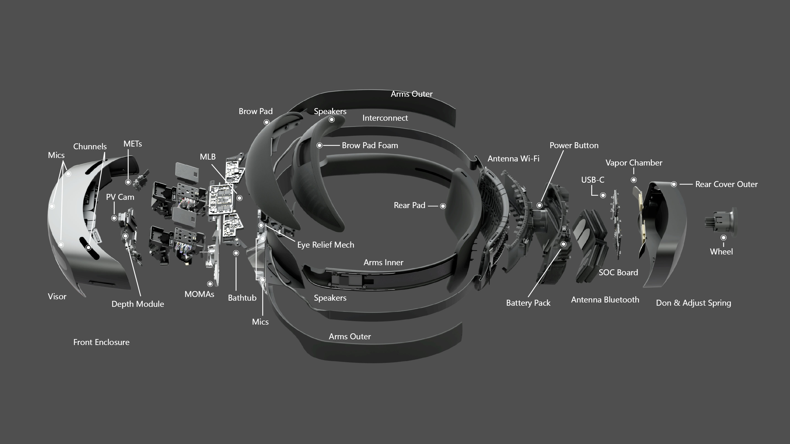
4.5.2 Software
Development options for XR systems are limited. For creating custom apps on HL2, Microsoft supports and endorses Unity9 with the Mixed Reality Toolkit10. Ultimately, the need for model and area based tracking capabilities required further tooling. Each element is described below.
4.5.2.1 Unity
Best known as a “game engine,” Unity is a very capable tool, commonly used for industrial, commercial, and defense applications. It offers a comprehensive feature set for creating and animating objects, rendering high-quality visuals, programming systems and interactions, simulating physics-based dynamics, processing music and audio, designing user interfaces, and much more.
Despite its complexity, Unity is relatively easy to learn. High quality training, documentation, and support are widely available, both through official channels and from a large and enthusiastic development community. Like most tools of its type, Unity is extremely extensible via plugins, many of which are distributed through the official asset store.
Unity is free for non-commercial and academic applications11. For research applications like this one, which will not be distributed or otherwise commercialized, its Terms of Service12 did not pose major concerns. Crucially, Unity allows users to retain rights to content they create, and makes no ownership claims over it.
Other options, including Epic’s Unreal and Vuforia Studio, were carefully considered but ultimately rejected due to a lack of support, functionality, flexibility, or some combination thereof.
4.5.2.2 Mixed Reality Toolkit (MRTK)
The MRTK is a software development kit (SDK) designed to simplify and accelerate the development for XR hardware, including the HL2. It provides developers access to essential HL2 capabilities, including spatial mapping, hand and eye tracking, natural input modalities, and more, all from within Unity.
MRTK is a free, open-source project that was initiated by Microsoft and first released under the very permissive MIT License (Saltzer, 2020) in 201713.
4.5.2.3 Vuforia Engine
MRTK’s built-in tracking support is limited to image-based solutions and spatial anchoring techniques that were insufficient for this project. After exploring available options, it was determined that the Vuforia Engine14 (VE) by PTC could best address that limitation. This SDK works with Unity, MRTK, and the HL2 to add robust marker, model, and area based tracking capabilities that were necessary for this project.
PTC’s Vuforia product line is a commercial product designed for enterprise customers, but the Basic version of the Engine SDK is available at no cost. With that plan a limited number of model and area targets can be generated, so long as the resulting app is not published15. Within the constraints of this work, PTC’s Terms of Use and Developer Licensing Agreement16 posed no significant concerns.
4.5.3 Timeline
The software used for both HL2 treatments was based on work originally done during the Summer of 2022 by a team of three undergraduate computer science and software engineering students. Led and directed by the author, that team created an augmented in-situ training prototype for manufacturing operators. The resulting system utilized a HL2 to align in-context instruction with the workpiece using image based methods — QR codes attached to the fixture.
In the following semester the same team adapted and extended the underlying codebase to support this study. This effort primarily consisted of assessing enhanced tracking tools, integrating the selected SDK, configuring area and model based tracking, and adapting instructional content from the PAR treatment. The project timeline is approximately illustrated by Figure 4.20.
4.5.4 Strategy
Development was iterative with roughly two-week sprints. Except during the summer, the developers were full-time students and were managed accordingly. Expectations had to reasonably balance their availability and inexperience with the project goals and timeline. Flexibility was critical to everyone’s success. Atlassian’s Trello17, a lightweight, web-based project collaboration tool with kanban style task tracking, was used to manage the project.
4.5.5 Tactics
The HMDAR and HMDMR apps were developed in Unity version 2022.x with MRTK v2.7x and VE v10.7x. Development was done entirely on MSI GE76/66 Raider (11UH-053/227) laptops running the 64-bit version of Windows 10 with the latest updates. Both laptop models were equipped with an Intel Core i9-11980HK CPU, NVIDIA GeForce RTX3080 GPU, 32 or 64GB, and 2GB of M.2 NVMe storage.
Systems were configured with the Visual Studio 2019 integrated development environment (VS) as described in the MRTK setup instructions18. Unity Version Control (VCS, formerly Plastic) was used to manage all assets and source code, allowing the developers to track changes and collaborate effectively.
All programming was done in C#, as required by Unity. C# is an object-oriented language with strong typing and simplified memory management. It has a familiar syntax that is similar to Java and C++, both of which influenced its design. This enabled the developers, all new to C#, to adapt with relative ease.
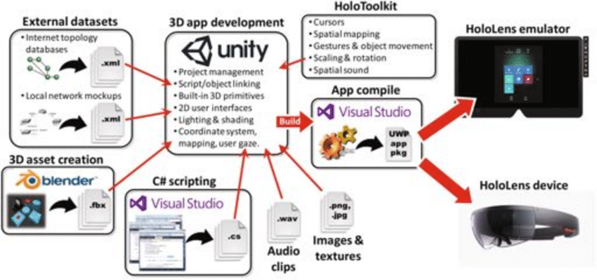
Unity development for HoloLens2 generally proceeds as illustrated in Figure 4.21, and described below.
Configure a scene in the Unity editor, including the placement, orientation, and properties of rendered items and UI components, along with cameras, lights, and other “helper objects” used to manage the experience.
Write C# scripts to control scene interactions. These scripts are attached to game objects and get events, trigger responses, and pass messages to other objects. Unity’s component-driven architecture offers a variety of predefined methods and event functions, which is extended by MRTK.
Do initial testing, using the Unity editor to simulate HL2 interactions directly on the laptop screens. This approach allows for rapid iteration and real-time feedback to changes made in the editor, facilitating early debugging.
Building for the HL2 device is a two step process. First, Unity generates a bundle of processed data and scripts. The result is then used by VS to compile and package a UWP (Universal Windows Platform) app for the HL2. In the process all C# scripts are converted into C++, and then into a native binary for the HL2’s ARM-based architecture.
Finally, the UWP app is transferred to the HL2 via USB.
The inter-dependencies between Unity, MRTK, and VS, each with their own packaging systems, dependencies, and versions, made this an intricate process. Our initial understanding was greatly accelerated by Microsoft’s online resources19 and tutorials20, along with Ferrone’s annually updated Learning C# by Developing Games in Unity (2021).
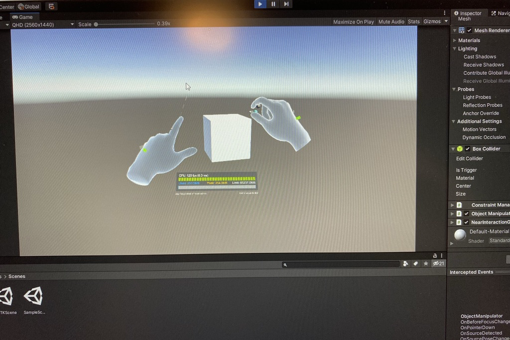
4.5.6 Design
4.5.6.1 HMDAR Treatment
The HMDAR experience was analogous to that of the PAR treatment. Interactions in both were controlled by hand placement / motion in the scene, mimicking button inputs. Both used a fixture to keep the model in the reference position, facilitating the alignment of virtual objects. Essentially, both were projected AR experiences, differentiated primarily by the manner of projection and input detection.
The PAR system used traditional optics to project virtual instructions onto the work surface and a depth-sensing camera to detect inputs. “Tracking” in this case was static and mechanically set, where the projector’s orientation, throw angle, and focal length were fixed based on its location relative to the workpiece.
The HMDAR system used the HL2 to project virtual instructions into the operator’s visual field via a sophisticated sensing, display, imaging, and optical systems. This user-centric display is the affordance that differentiates the HMDAR treatment. Tracking was dynamic, based on the operator’s position and head angle relative to the work surface, and intrinsic properties of the HL2 system. Input detection utilized the system’s hand tracking capabilities, which rely on fused sensor data and machine learning techniques.
4.5.6.2 HMDMR Treatment
A consistent approach was taken for the HMDMR treatment design, extending the capabilities of the HMDAR treatment. HMDMR used more sophisticated tracking methods to enable freeform interaction with the workpiece, as described in Section 4.2.3.
4.5.7 Implementation
The HMDAR treatment was developed first. Using the HMDAR version as a baseline, the HMDMR version extended it to incorporate model based tracking methods.
4.5.7.1 HMDAR Implementation
This effort primarily involved: (1) recreating the PAR’s instructional design approach, (2) setting up the interaction methods, and (3) implementing the tracking system.
The first was relatively straightforward. Assets were modeled in Unity to resemble components from the PAR instructions. They were arranged in the scene relative to the workpiece location, based on an established scale. Finally, scripts were written to control the scenario logic, changing the scene based on user behavior.
Our interaction implementation relied on HL2 input systems provided by MRTK’s modular, component-based architecture. In this system, input actions like select or activate and the events they trigger act as the bridge between the user’s physical actions and the software’s response. Physical actions are captured via HL2 sensors and interpreted by MRTK’s various modalities, including gesture and hand tracking. Different interaction styles are associated with available pointer types, e.g., ray pointers for distant interactions and poke pointers for nearby. With this approach a diverse range of interactions can be design through careful composition of components.
For HMDAR tracking, we relied on VE’s Area Targets21 feature, an implementation of the area-based tracking methods described in Section 2.7.4. Area-based tracking compares a pre-generated 3D model of the workspace with live 3D data of the user’s surroundings. This “spatial map” is a polygonal mesh generated in real-time by the HL2, using data from the depth sensor, visible light cameras, and inertial measurement unit. A sample is shown in Figure 4.23. From this comparison, the system can determine the current position and angle of the user’s head.
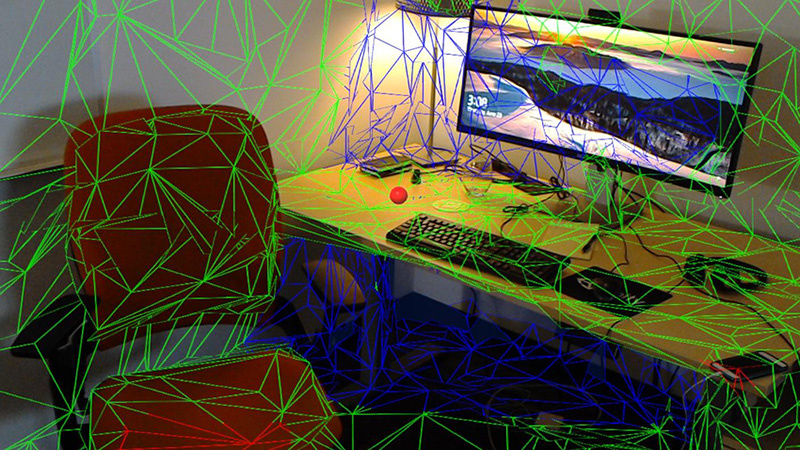
Area-based tracking was selected over image or marker-based methods to minimize tracking loss. Marker-based tracking will fail if there are no markers within view of the HMD’s sensors. Area-based tracking provides a continuous map of registration points for the entire scene, greatly reducing drop-outs. It also tends to (re)acquire tracking more quickly than marker-based methods, again due to the number and distribution of features available.
The 3D model is created offline, first by scanning the area with the Vuforia Creator App22. Pictured in Figure 4.24 (a), this tool uses a LiDAR equipped iPhone / iPad Pro to capture an accurate model of the area in E57 format, per ASTM E2807 (ASTM, 2019). The E57 data is then processed to generate an Area Target asset package for Unity, which includes all the required geometry, textures, and metadata.
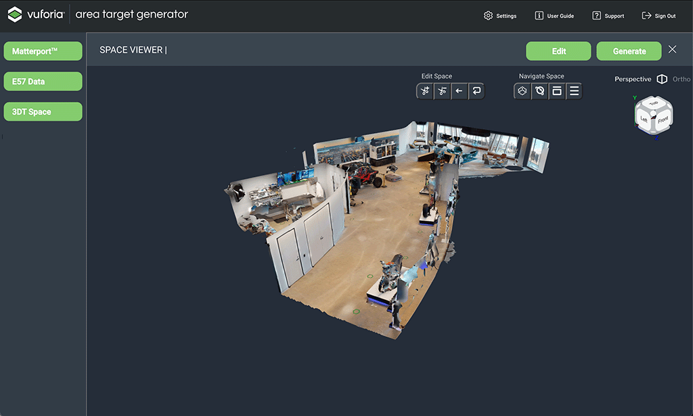
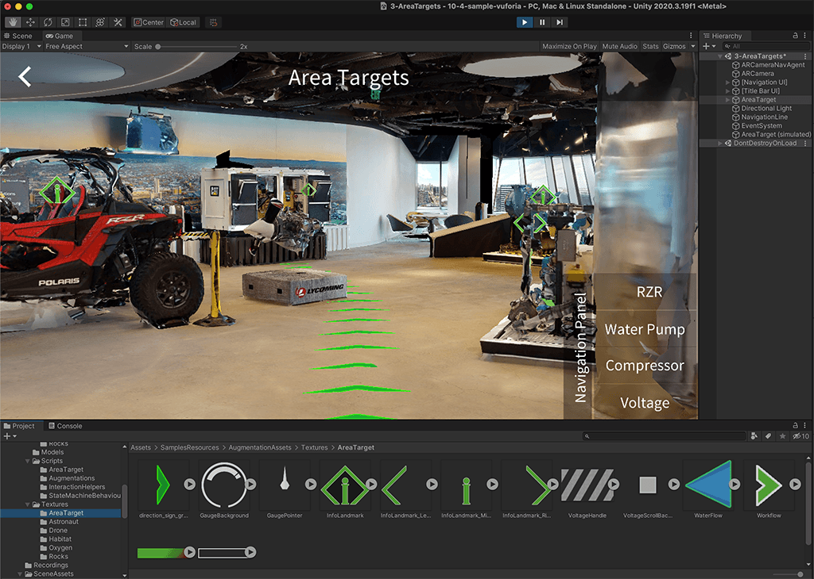
Once imported into Unity and properly configured23, the 3D model is used to align the placement of virtual objects in the real world scene. This allows the developer to design the experience in the context of the real world model, as seen in Figure 4.24 (b).
Finally, at runtime, key points encoded from the Area Target mesh are compared with the real-time spatial map to estimate the operator’s head position and angle relative to the workpiece, thus establishing a coordinate system for the spatially coherent placement of virtual objects.
4.5.7.2 HMDMR Implementation
To support freeform interaction, the system needed a way to properly place instructional cues on the workpiece, regardless of its position and orientation. This was accomplished with model-based tracking, using the Model Targets24 feature from VE. Note that this treatment continues to use Area Targets for workspace pose estimation, but adds Model Targets for those involving the workpiece. Otherwise, the HMDMR implementation is unaltered.
The distinct technical requirements of model and area based tracking necessitate separate implementations. Where area-based tracking focuses on spatial orientation within a static environment, the prime challenge for model-based tracking is dynamic object recognition and pose estimation. While there might be some overlap in the fundamental computer vision and machine learning techniques used, the specific algorithms and their optimization differ significantly, catering to the unique challenges of each tracking type.
Overall, the Model Target implementation process was similar to that for Area Targets. First, a 3D model of the object was constructed and converted into a Model Target using VE tools. These steps were completed offline. At runtime, the system again compares live sensor data with Model Target data to recognize and then track object(s) in the scene.
Model source data was constructed in LeoCAD25, a tool for designing models using LEGO bricks. LeoCAD uses the comprehensive LDraw26 database of LEGO parts, most of which are modeled from actual pieces. This standard uses a proprietary unit of measure, the LDraw Unit (LDU), which is based on the smallest stud-to-stud spacing on a standard LEGO brick: 1 LDU = 0.4mm.
LeoCAD’s design adheres to LEGO design principles, ensuring that the way parts attach in the software reflects the real-world equivalent. The combination of LDraw’s precision and LeoCAD’s tooling ensures that the resulting models are faithful representations of their physical counterparts.
Figure 4.25 (a) is a screenshot of the LeoCAD interface, highlighting some of its capabilities. Both LDraw and LeoCAD are unofficial, open source, community run, multi-platform tools that are free to use.
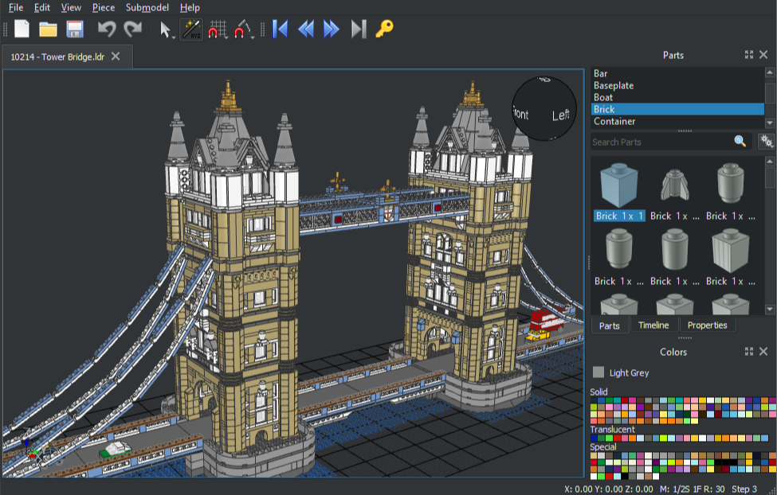
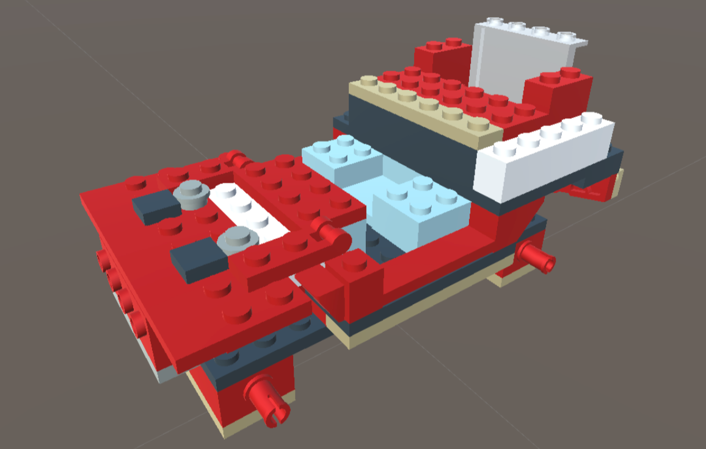
Our source model was constructed in LeoCAD based on the PWI, using LDraw models of the specified LEGO parts. The result, seen in Figure 4.25 (b), was exported as a 3DS27 file and imported into Unity as a part hierarchy. There, it was scaled from LDUs to conventional units and exported in the FBX28 interchange format for VE’s Model Target Generator (MTG).
The MTG supports two Model Target types. Advanced Model Targets can be automatically recognized and tracked from any angle, without the manual alignment and recognition process required by Standard Model Targets. The requirement for the HMDMR treatment to provide freeform interactions in an otherwise equivalent experience mandated the use of Advanced Model Targets.
The MTG process begins by checking for model suitability. Model targets must be free of errors and unnecessary internal geometry, with rigid geometry and real-world scale. Ideal candidates for Advanced tracking also feature optically stable surface features, minimal symmetry, and accurate surface colors. Highly reflective, transparent, or featureless surfaces provide insufficient visual cues and highly symmetric objects make it difficult to determine orientation.
Next, the model geometry is analyzed and a set of Guide Views are automatically generated for a 360-degree recognition range. This step leverages deep learning methods trained to generate optimal views from arbitrary angles based on the geometric features and surface qualities of the model. The output of this process includes the trained recognition model, along with the associated dataset and guide views. This package is imported into Unity and used by VE to provide the desired model-tracking functionality.
4.5.8 Development Challenges
Software system development is always challenging and this work was no exception. The system requirements and complexity, hardware and software issues, and resource constraints all contributed to a variety of challenges that the team overcame.
A fundamental consideration in the success of any collaborative development effort is a reliable software environment. The integration of Unity, MRTK, and Vuforia, along with their requisite packages and settings, was intricate and fragile. This made it difficult to ensure a reliable baseline and consistent results for all developers. Even with version control, too much time was spent chasing bugs and deployment issues rooted in these issues.
Implementing accurate and robust tracking for the AR/MR applications posed additional challenges beyond the selection and integration of another third-party framework (Vuforia Engine). Area-based tracking was mildly sensitive to the surface properties of some materials and workstation configuration changes, requiring some additional care in setup. In particular, the exterior of the fixture had to be masked with painter’s tape to limit the reflectance of its milled aluminum surfaces. These detractions were more than offset by the overall robustness of the method, which all but guaranteed nearly instant acquisition of tracking from the rich set of provided features.
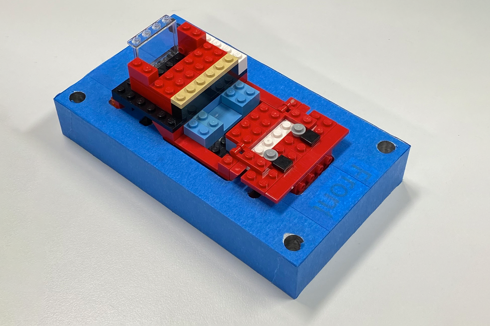
The inherent complexity of MR also led to less reliable tracking and increased instability in that treatment. When tracking is interrupted the system is unable to place virtual objects in the scene. The user experiences this as a “drop-out,” where everything disappears from their field of view. Once tracking is reacquired, the virtual objects return. In rare cases of extreme instability, this cycle could cause the system to crash or require a reset. As described in Section 4.11.5, the frequency, duration, and impact of these events varied, and was accounted for.
Working with expensive, body-worn hardware created additional complications. Final testing could only be done on the HL2, which requires physical access to the device. The time required to build and deploy an update to the HL2 significantly slows iteration, adding to the disruptive nature of regularly donning/doffing a shared headset. These factors created friction that naturally led developers to prefer testing via simulation or emulation, neither of which provides a complete or accurate view of user experience or system performance.
Developing AR/MR applications for the HL2 requires careful design and optimization. To avoid related discomfort concerns, smooth performance and minimal latency must take priority. Considering the device’s computational constraints and the complexity of the required tracking and rendering tasks, this may require tradeoffs in the instructional design. Thankfully, the design of the PWI and “low fidelity” nature of LEGO bricks helped mitigate these challenges.
Finally, reliance on a student-led development effort demanded a flexible and supportive management approach from recruitment to completion. None of the primary contributors had previous experience with the software, hardware, methods, or tools involved. Despite that, they built a successful instrument from scratch. Beyond hard work, skill, and determination, their success owes something to a careful management of project requirements, system capabilities, and resource constraints in the academic context.
A number of other challenges commonly associated with software development projects were largely avoided through careful process planning, iterative development, and ample time allocated to training early in the project.
4.6 Participants
This section will outline all participant recruitment, selection, benefits, and assignment considerations. The onboarding process is also described.
4.6.1 Recruitment and Selection
A convenience sample of participants were recruited from the Auburn University community using digital and printed promotions around campus, the graduate school mailing list, and outreach in various undergraduate engineering classrooms. The latter focused on freshman and sophomore engineering students in Industrial & Systems Engineering, as they are accessible and most likely to meet all requirements. Figure 4.27 exemplifies the recruiting materials, approved copies of which are included in Appendix E, IRB Documentation.
Potential participants in the first investigation were screened for exclusion based on their age (under 19) or a tendency to motion sickness. Additionally, they were screened for experience with head-mounted or projected AR devices using gesture based controls. This does not exclude those having experience with VR headsets like META’s Occulus product line, which is relatively common among the target population, but utilize traditional input devices.29 Finally, any candidate that had previously participated in a manufacturing simulation at the Tiger Motors Lean Education Center was excluded. This controlled for prior experience with the assembly task, as part of INSY 5800/6800 or otherwise.
Due to practical constraints described in Section 4.10.2, the study could accommodate maximum of 100 participants. Realistically, 70-90 were expected based on early response. For the results to exceed the minimum desired statistical power, at least 60 participants were required. Based on these considerations, the recruitment goal was 70+ participants.
4.6.2 Benefits and Compensation
Other than the compensation described below, there were no direct benefits for participants in this study. All were offered an opportunity to interact with projection and/or head-mounted AR hardware and training methods for the first time. This may have lead them to a greater appreciation of the benefits and opportunities these technologies offer.
To incentivize sign-ups, some extra credit and the possibility of financial compensation were offered. In addition, all participants were invited to an event at the end of the study.
4.6.2.1 Extra Credit
Any instructor promoting these studies to their students was free to provide extra credit for participation. This was entirely at their discretion. We cautioned all instructors to offer no more than 1% on the final class average, and encouraged them to provide alternative bonuses for students unable to participate.
4.6.2.2 End of Study Event
At the conclusion of the main study, all participants were invited to return to the lab for an “open house” event. This gave them the opportunity to experience other treatments and related technologies, and learn more about the experiment and lab. Food and drink were provided. In exchange, we asked all attendees to participate in a brief retention experiment. Attendance and participation were voluntary.
4.6.2.3 Compensation
The possibility of financial compensation was introduced in the final IRB Modification, submitted April 3, 2023. Following its approval on April 10, we began promoting this retroactive benefit. All participants in the main study were eligible for one of three random drawings. Those that attended the end of study open house qualified for additional awards, as outlined in Table 4.3.
| Study | Category | Quantity | Amount (each) | Sub-Total |
|---|---|---|---|---|
| Main | Participation | 6 | $25 | $150 |
| Retention | Performance | 1 | $50 | $50 |
| Retention | Participation | 4 | $25 | $100 |
For the performance prize in the retention study, eligibility was limited to those who completed the experiment in under one minute without errors. A total of $300 was awarded via email in the form of digital Amazon Gift Cards.
No member of the research team was eligible for any of the financial compensation described, and all payment processing was handled by appropriate members of the ISE staff.
4.6.3 Onboarding
The initial participant onboarding process was conducted manually by the PI. In a phone call with interested participants the PI would (1) briefly explain the investigation, recapping and elaborating on the recruiting materials; (2) discuss the exclusion criteria and identify relevant issues for the candidate; (3) set expectations for participant involvement, including time commitment and tasks; and (4) answer any questions the candidate had regarding participation in the investigation.
If the candidate indicated a willingness to proceed, their information was collected using the Subject Recruitment Data Sheet included in Appendix E. A unique participant ID was logged on the code list and a date and time for data collection were then assigned. As detailed below, the code list and consent form provided the only link between personally identifiable information and experimental data. Afterwards, a confirmation email was sent. A copy of the Informed Consent form was included for their review prior to the appointment.
This process quickly proved impractical, and a self-service web-based alternative was offered. By eliminating the reliance on manual, call-based screening, SignUpGenius30 streamlined the entire onboarding and scheduling process. This increased the rate for converting interested into scheduled participants and allowed the team to focus on running the experiments.
4.6.4 Random Assignment
Treatment assignment was accomplished through a combination of participant scheduling and treatment ordering. Participants set their own appointments based on availability. Without knowledge of the underlying treatments or their ordering, this was an inherently random process. During the intake process, each was assigned the next available treatment from a randomly ordered list.
Treatment randomization was completed before the onboarding process began. To ensure that all treatments were tested at the start of the experiment, a random sequence of all four treatments started the order. Next, a set of eight treatments, including two of each type, was shuffled to create a randomly ordered batch with an even distribution. This block-wise process was repeated as necessary to cover the maximum number of participants. The batches were combined, in the order generated, to create the final treatment sequence. This approach ensured random, balanced, and unbiased assignment, regardless of the final number of participants.
The treatment randomization process was implemented with a simple Python function, gen_treatment_order(), as seen in Figure 4.28, below. The random.shuffle31 function from the base Python 3.x distribution was used to randomly reorder a group of values. Though this program was only run once (after validating and verifying its output), no random seed was set to ensure that a unique sequence was generated with each use.
def gen_treatment_order(n=2):
'''
generate random treatment order
IMTS is a list of the four treatments
NUM_CYCLES is the number of 4-treat batches
'''
# start with random selection of all treats
trials = []
first_set = IMTS.copy()
random.shuffle(first_set)
trials.extend(first_set)
# shuffle IMTS in groups of 8 (two cycles)
for _ in range(NUM_CYCLES // n):
part_trial = IMTS * n
random.shuffle(part_trial)
trials.extend(part_trial)
return trials4.7 Research Compliance
As with any protocol that involves human participants, this study required Institutional Review Board (IRB) approval. This section will describe that process, and detail considerations related to consent, privacy, security, and risks / discomforts identified.
4.7.1 Institutional Review Board
An initial review of the protocol found that it created minimal risk to participants, did not involve vulnerable populations, invasive methods, or sensitive data, and required informed consent. Furthermore, it involved the “collection of data from voice, video, digital, or image recordings,” which is identified by the University as a category of research eligible for expedited review.32
The IRB submission and expedited review process began in December of 2022, and final approval was granted on April 10, 2023. During that time four versions of the IRB were approved, and only two rejected. The approval dates and changes are summarized in Table 4.4.
| Version | Description | Approved |
|---|---|---|
| 1.1 | Original submission | 1/30/23 |
| 1.1a1 | Adjusted protocol to add survey instruments | 2/13/23 |
| 2.1 | Incorporated 2nd investigation | 2/23/23 |
| 3.0 | Added compensation | 4/10/23 |
This process was somewhat complicated by the decision to incorporate two separate but related investigations into a single application. The first investigation (I1) is the focus of this dissertation. I2 (the second investigation) is a separate work that used similar methods to investigate the relationship between I4.0 technologies and Lean Manufacturing systems. There is no connection between I1 and I2 beyond the collaborative relationship between their research teams.
The development of the IRB was a collaborative effort which I spearheaded as the Principle Investigator (PI), authoring the majority of the application, and ensuring alignment with the study’s goals and ethical standards. Contributions from other members of the research teams, as specified in Appendix A: Team Contribution Matrix, were essential to its thorough design and timely approval.
The final approved version, including all supporting materials, is incorporated as Appendix E: Institutional Review Board Approval. All processes described herein are all based on the approved protocols.
4.7.2 Consent
All participants were provided a copy of the approved informed consent form in advance of their trial. As part of the intake process they were provided a paper copy for further review and encouraged to ask any questions or share any concerns they might have. After a verbal confirmation that the participant had read and is satisfied with the terms of the informed consent agreement, they were asked to sign and date it. The form was then countersigned and placed in a locked filebox.
4.7.3 Privacy and Data Security
A variety of data were collected for this study, including video recordings, performance metrics, demographic information, and survey responses. All data were collected anonymously, referenced only by the unique ID assigned to each participant. The code list, used solely for contacting participants during the ongoing protocol, was securely stored alongside the consent forms in a locked box within a restricted-access location. Notably, the consent forms do not include any reference to the participants’ ID numbers. Both the consent forms and the code list are maintained exclusively in paper format to facilitate secure storage and subsequent disposal through shredding. Upon the completion of the protocol, the code list will be destroyed, thus rendering the data completely anonymous. These measures were diligently enforced to protect the privacy and confidentiality of participant data.
All electronic data pertaining to the study are stored on a secure server. Non-identifiable data is available to other members of the research group, for the purposes of approved research, under conditions that ensure continued confidentiality. Access to consent forms and the code list is limited to the PI and, if required, the research committee.
For reasons detailed in the study design, two angles of each trial were recorded on video; a view from the participant’s perspective and a side view focused on the work surface. The side view was carefully framed to limit identification of the participant, and later edited to crop out identifying features, ensuring participant privacy. Additionally, all participants were required to wear the HoloLens2 head-mounted display, which further obscured their appearance.
4.7.4 Risks and Discomforts
Beyond the privacy and data concerns previously described, other potential risks and discomforts were identified. Prolonged used of HMD VSTs has been reported to cause mild neck strain, disorientation, and eye strain in some cases. The optical and physical design of these systems can also result in a limited or obscured field of view and degraded acuity, which could increase the participant’s risk of trip or impact (UL, 2022).
The HL2’s untethered design with wide, unobstructed field of view mitigates many of these concerns, but additional precautions were taken. All participants were screened for a tendency towards motion sickness. The study was intentionally designed to limit each participant’s time wearing the HL2, and to ensure that they were generally stationary in an obstruction-free environment. Finally, the Lean Lab was selected in part because it is a organized, safe, and well-lit environment with no history of related hazards.
As these experiments were conducted in the Spring of 2023, the risk of COVID-19 exposure remained a lingering concern. Precautions were implemented during data collection as outlined in the University-provided protocol for studies without high-risk procedures or participants (Category C). All work surfaces and equipment were wiped down before and after each participant, and necessary supplies were made available. All research participants followed the University’s guidance on self-screening. Throughout the administration of this study, the CDC’s COVID-19 community level for Lee County, Alabama remained LOW, eliminating the need for participant screening. The Shelby Center for Engineering Technology, where this protocol was administered, is assigned the highest level of building readiness due to increased air turn-over and filtration.
This study did not involve any vulnerable populations. Overall, the likelihood and impact of any of the risks outlined above were considered low. Nevertheless, all participant activities were supervised to monitor for likely symptoms or unexpected side-effects. In either event, the experiment would be suspended and the situation assessed. If escalation was deemed necessary, an emergency plan and contact list were available to the research team.
During the post-experiment debriefing all participants were asked about injury and discomfort, and were observed for lingering or delayed effects. Ultimately, only a few mild discomforts were reported, and no significant side effects, injuries, or need for escalation.
4.8 Conduct of First Session
This section will describe key operational details for conducting the first session protocol, including the learning and recall experiments. The conduct of this study was designed to ensure participants felt comfortable and understood the tasks, while also aiming for valid results and thorough data collection. The approach balanced a need for clear procedures and ethical integrity with the flexibility required to adapt to individual participant needs.
4.8.1 Division of Labor
The approach detailed herein was designed for three roles, referred to as the primary, secondary, and tech. The role of the primary investigator (PI) was always played by the author.33 The secondary investigator (SI) role was typically filled by his counterparts on collaborating studies. Finally, the tech support (TS) role was played by a member of the study’s HL2 development team.
The responsibilities of each role vary throughout the session as described below. All three roles were usually filled for each session, allowing for the most comfortable division of labor, but some trials were run effectively with fewer.
4.8.2 Start and End of Day Procedures
Daily preparation for the study involves careful setup across three roles. The PI ensures the schedule and trial documents are ready, workstations and PCs are prepared and operational, and camera equipment is correctly configured and tested. The SI handles the specifics of the trial setup, including treatment slates, car checks, and part inventories, while coordinating with additional support staff. TS focuses on maintaining the software, streaming setup, and hardware sanitation. Together, the team ensures a controlled environment ready for trials.
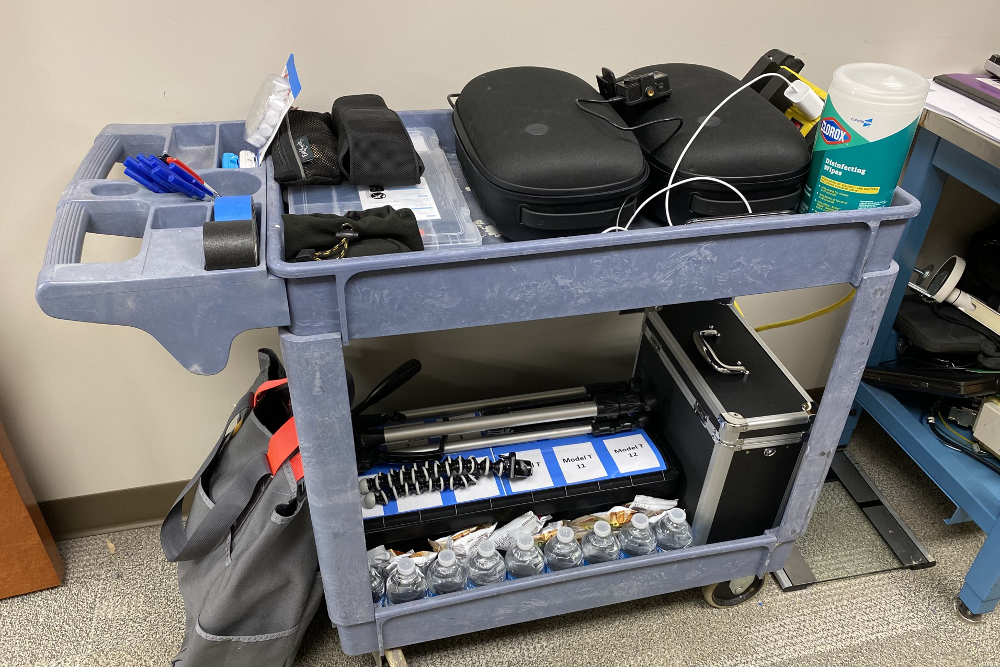
The PI is also responsible for returning the lab it its original condition at the end of each day. Post-session procedures include resetting all cell two workstations, powering down equipment, cleaning and sanitizing the lab, turning off lights, and securing the premises. Additionally, batteries and memory cards are tended to, and consent forms securely stored. Both setup and tear-down were facilitated by the rolling cart adopted for this study (Figure 4.29), affectionately known as the “battle wagon.”
4.8.3 Workflow and Roles
Workstations seven through nine are configured for the first session as seen in Figure 4.30. The numbered positions indicate the flow of work in process (WIP) through the system. Assemblies begin at (1) and move, sequentially, to ST-8 (2). When a car is completed or retired (due to breakage considered irreparable by the participant), it is moved to either the green (3a) or red tray (3b), respectively. WIP at (3a) and (3b) is promptly collected and moved to (4) for inspection, after which they are moved to the results tray (not represented). Video recording and HL2 performance are monitored via the PC and iPad represented. This figure is not to scale but does effectively convey the approach used.
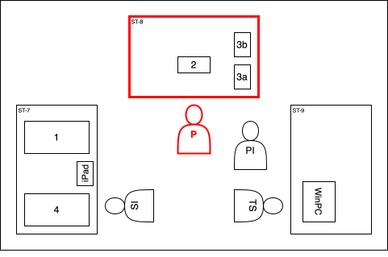
The flow of WIP is facilitated by the SI, who is responsible for collecting and inspecting finished assemblies, recording results, and related tasks. The PI is focused on interactions with the participant and recording observations about their performance. The TS manages the HL2 system and acts as a secondary observer. In addition to these primary duties, all team members collaborated effectively to ensure the successful conduct of this study. This division of labor is summarized in Table 4.5.
| Responsibility | Description | Role |
|---|---|---|
| Workflow | Facilitate the flow of work into and out of ST-8. Ensure that an inventory is available on ST-7 and promptly collect completed or rework items from ST-8. | SI |
| Data Collection | Review all completed, retired, and incomplete assemblies. Record the number and type of errors for each, along with the steps completed if incomplete. | SI |
| Documentation | Photograph the starting setup and the final output with the trial card in frame. Get additional photos were required to document unexpected results. | SI |
| Run HL2 | Manage operation of the HL2 for treatments and/or recording. Monitor the stream and recording. Troubleshoot as required. | TS |
| Interact | Lead all participant interactions. | PI |
| Observe | Carefully observe the participant without disrupting their work. Intervene if required to correct unexpected behavior. Record interesting observations and insights. Respond to any work-stoppage events. | PI |
| Recycle | Prepare work area for next experiment or participant. Disassemble ST-8 complete cars to ST-7 state and verify. Maintain bin inventory, reset recording devices and HL2. | SI & TS |
At the start of each day, ST-7 through 9 are cleared and configured as described above. Ten pre-built assemblies are positioned to the participant’s left, at position (1). The construction of all ST-7 inventory is carefully verified against ST-7 standards, as pictured in Figure 4.31, to ensure an accurate starting point for all ST-8 tasks. A completed ST-8 assembly is also pictured for comparison.
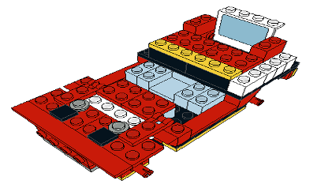
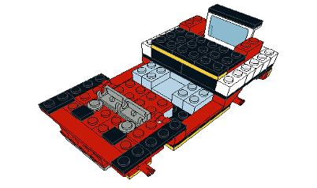
4.8.4 General Policies
Except as otherwise noted, several policies are followed throughout the conduct of each session. Participants are encouraged to ask questions at any time. At each transition point, their understanding and readiness to proceed are confirmed. Discussion is allowed but limited and questions are answered but not embellished upon. Members of the research team are not allowed to prompt or otherwise instruct participants, except as specified. Overall, these policies were established to put participants at ease while maintaining a semi-formal tone and staying “on-script.”
4.8.5 Session Procedure
Following the initial setup, each session would proceed as follows.
- Intake: welcome the participant, complete initial paperwork and instruments
- Orientation: introduce the participant to the Lean Lab and their work area
- Introduction: describe the general workflow at ST-7
- Demo: demonstrate the assigned treatment at ST-8
- HoloLens: introduce the participant to the HL2; don it and adjust fitment
- Practice: have the participant practice using their assigned treatment
- Learning Experiment: conduct the first experiment
- Intermission: complete TLX and SUS for first experiment
- Reset: prepare ST-8 for the second experiment
- Recall Experiment: conduct the second experiment
- Debrief: complete TLX and SUS for the second experiment; gather General Feedback
- Recycle: prepare ST-8 for the next participant
4.8.5.1 Intake
Each participant is greeted and welcomed into the conference room, where drinks and snacks are offered. After they are settled, the participant is talked through the consent document, which was previously supplied. Once any questions are answered, they are asked to acknowledge their understanding and acceptance of it, initial each page, and sign. The document is countersigned by the primary investigator and placed in a lockbox with other consent forms before proceeding.
In accordance with the experimental procedure outlined in the NASA TLX instructions, all participants were familiarized with that instrument during the intake process. The primary investigator first introduces the TLX as a tool for workload assessment and briefly summarizes its design. The participant is then asked to read the provided Subject Instructions, after which their questions are answered. Finally, the participant is asked to complete a mock administration of the TLX for a hypothetical task, including both the Sources of Workload Evaluation and Workload Rating Scales. For this step they were asked to imagine they had just run a marathon, a task chosen for the high level of workload likely associated by all participants, regardless of running experience.
Next, the participant provides a variety of demographic data on the Participant Intake Form and self-reports behavioral data on the Behavioral Control Survey. Finally, they are briefed on COVID protocols and emergency procedures.
4.8.5.2 Orientation
The participant is guided to the second work cell while receiving a brief summary of the lab’s LEGO-based training methodology, which emphasizes real-world practices and efficient, high quality production. Importantly, they are made aware of the line’s 60-second takt time and its implications. This description is read from a script to ensure consistent delivery of the information. Upon arrival at the second work cell, they are introduced to assisting members of the research team.
4.8.5.3 Introduction
At the second work cell, workstations seven and eight are identified. Before moving to ST-8, where the experiment is conducted, participants are introduced to the general assembly process at ST-7. They are shown how to interpret the paper work instructions and a few assembly steps are demonstrated. The PWI from ST-7 is used to limit exposure to the ST-8 task details.
Then, a few rules and expectations are set related to dropped parts, correcting errors, breakage, and rework. It is also explained that the research team will only intervene in the event of an event that stops work.
4.8.5.4 Demonstration
The participant is led to ST-8 where they are informed of the assigned treatment. Interventions are briefly demonstrated to all those assigned, while members of the control group proceed to the next step. Each intervention is demonstrated in a manner similar to that used for the PWI at ST-7, with a focus on the treatment’s operational details rather than the instructional content. Critically, all system controls, UI elements, and feedback mechanisms are explicitly described.
The HMDAR and HMDMR treatments, whose output is invisible to observers, requires a different approach. One member of the research team performs the demo while another narrates the process. The HL2’s output is simultaneously streamed to a nearby laptop on ST-9. This allows participants to observe the HL2 operations as they are described, from both real and virtual perspectives.
4.8.5.5 HoloLens
All participants are reminded that, for observation and recording purposes, they are required to wear the HL2 during the practice session and all subsequent experiments. Additionally, they are notified of a second camera, positioned to the left of ST-8 and adjusted to only capture the work area.
Streaming is initiated on the HL2 before the participant is advised to don the device. Assistance is provided as necessary to ensure proper fit, after which the participant is asked to look at a reference point. If the streamed video centers on that target, it confirms that the wearer’s line of sight aligns with the HL2’s field of view.
4.8.5.6 Practice
Participants are instructed to engage in a brief practice session during which they assemble the first four bricks according to the provided instructions. This task is designed to ensure their operational understanding of the instructional treatment, while deliberately avoiding undesirable task training.
4.8.5.7 Learning Experiment
The assigned task, timeline, priorities (as outlined in Section 4.4.2.1), and workflow (as outlined in Section 4.8.3) are described. Recording is then initiated on both cameras and participants are asked to view the treatment slate (see Figure 4.32) while recording and alignment are re-checked. This also serves to mark the start of both videos with essential details that might help avoid confusion later. A 10-minute timer in view of the participant and both cameras is initiated, and they begin building with the aid of their IMT. Data is collected during the experiment as described in Section 4.4.2.3.
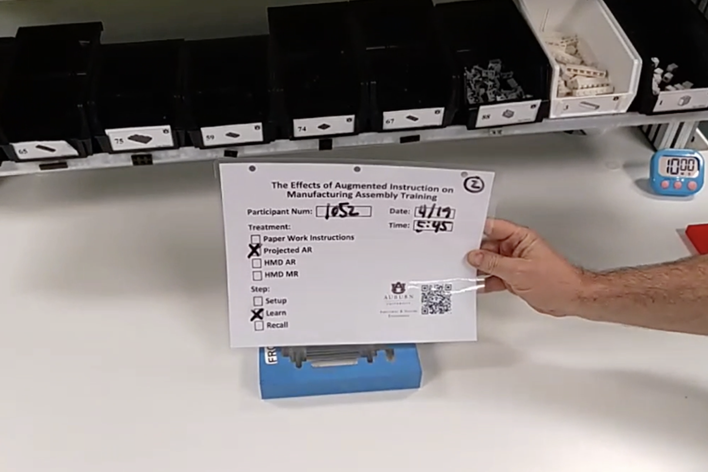
4.8.5.8 Intermission and Reset
At the conclusion of the first experiment recordings are stopped and the participant is asked to remove the HL2. Then they are escorted back to the conference room, where they are asked to complete the TLX and SUS based on their experience.
During this intermission, the research team records the learning results and resets the workstation for the next experiment. Four pre-built assemblies are put into inventory at ST-7, and any models built in the previous experiment are recycled to that standard. Photos of the results tray and reset inventory are taken to document the process and results.
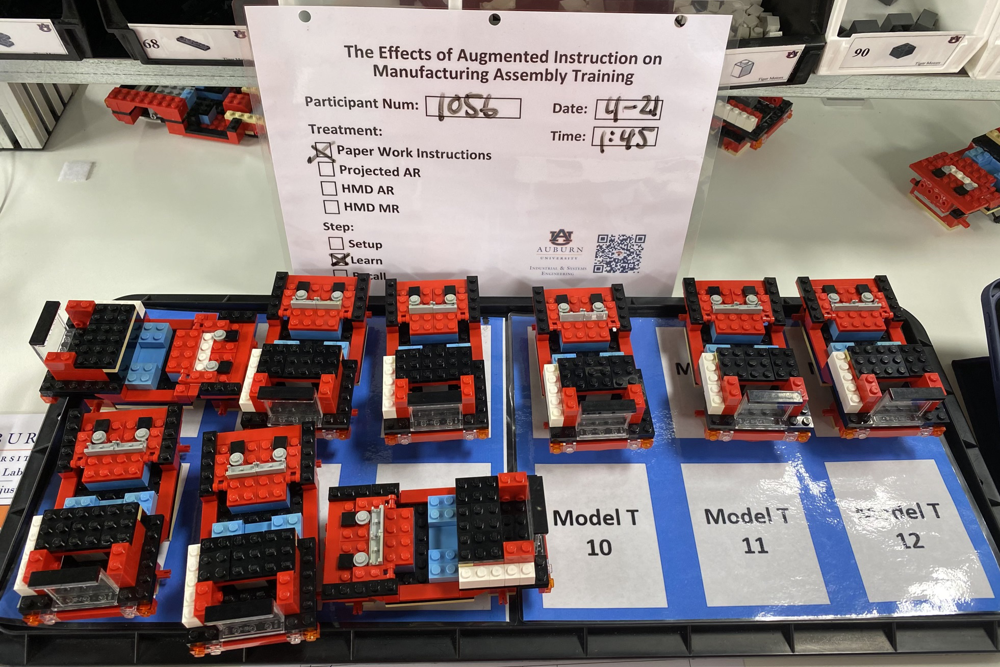
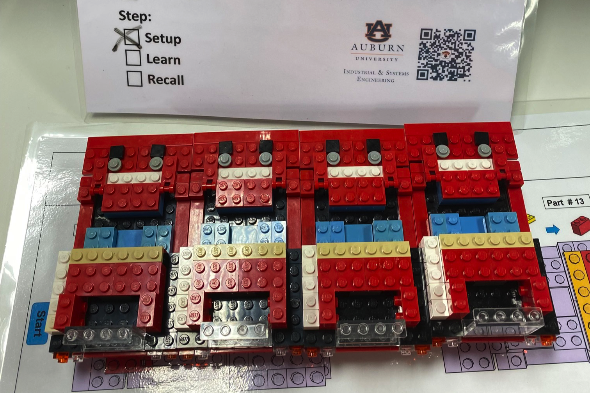
4.8.5.9 Recall Experiment
The second experiment is conducted in the same manner as before. No timer or intervention is used, and the instructions / priorities are altered, per Section 4.4.2.2. Otherwise, the procedure is identical. This experiment concludes when four cars are completed.
4.8.5.10 Debrief
Following the second experiment the participant is led back to the conference room for the accompanying round of the TLX and SUS. Finally, the PI solicits any additional feedback the participant is willing to offer. For those that require prompting, the PI can refer to a list of standard topics. All participants are asked if they experienced injury or discomfort during the session. Feedback and responses are recorded on the General Feedback Sheet. Finally, the participant is thanked for their time and escorted to the exit.
4.8.5.11 Recycle
During the debrief, the research team records the recall results, resets the workstation for the next participant, and documents both with photographs.
4.9 Conduct of Second Session
This section will describe key operational details for the retention assessment, which was conducted during the end of study event. As described in Section 4.4.3, the scope and complexity of these trials was limited by expected traffic at the event. This also necessitated different signup procedures, lab arrangement, workflow, and staffing, all of which are described below.
4.9.1 Signup
The signup process was again managed by SignUpGenius, making it easy for the research team and invitees alike. The system was configured to help even out the flow of arrivals, preventing a backlog and keeping the event well attended throughout the day.
Twelve different start times were offered, one every 15-minutes between noon and 3:15pm. Up to five people could sign up for any start time, allowing for up to 60 total signups. Though we expected fewer, this ensured some flexibility in start times for those interested in attending. Start times were set, but all attendees were free to stay as long as they liked.
4.9.2 Setup and Traffic Flow
Prior to the event, the Lean Lab was arranged as depicted in Figure 4.34. Ongoing demonstrations for attendees would require the LG system at ST-8. Consequently, the retention experiment was relocated to ST-3, a similarly configured workstation in work cell #1. This choice ensured that the experience at ST-3 would most closely mimic ST-8, thus controlling for the effects of the change.
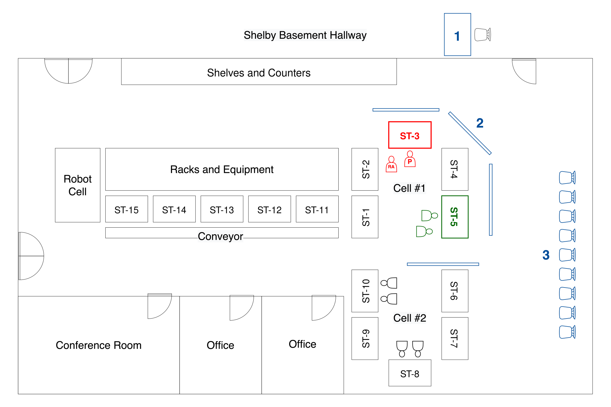
Experiments and demos from the collaborating study were conducted at ST-5 and 10, respectively.
4.9.3 Workflow and Roles
Before entering, attendees would register at (1), where they were given the appropriate data sheet and welcomed inside. Seating was provided at (3) to handle the queue of attendees waiting for their trial. Partitions placed at (2) obscured their view of the ongoing experiments and demos. This provided privacy and prevented re-exposure to the instructional material. As each retention trial concluded participants were led, in order of arrival, to ST-3. Those finishing were thanked and informed of the food and available educational / entertainment options.
Volunteers from both studies were responsible for directing attendees through registration process, through the queue to their assigned experiment, and onto the activities that followed. The general policies set forth in the first session were again applied.
At the end of the day the lab was cleaned and restored to its normal operating state.
4.9.4 Session Procedure
Participants were asked to complete the ST-8 task for one car, from memory, without reference (e.g., paper work instructions). Data were efficiently collected with a single video camera, timer, and photos. With this approach, only a single research associate (RA) was required to direct and document the trial. An additional volunteer was responsible for recycling the inventory of assemblies.
4.10 Administration of Protocol
This section will describe the manner in which the study was run, with a focus on administrative details like the team, scheduling, location, safety measures, quality assurance, and challenges.
4.10.1 Personnel and Certifications
The IRB that this research was conducted under approved two related but separate studies. A third study planned to use the data from both for separate analysis. Members of all teams collaborated in the administration of the separate experiments, helping one another provide the coverage and support required to perform over 100 trials in a single semester.
As a result, the final IRB listed 13 key personnel, as summarized in Table 4.6.
| Type | Description | Count |
|---|---|---|
| Study PIs | The Principal Investigators for all collaborating studies. | 3 |
| Faculty Members | Members of related committees, for oversight and institutional stewardship. | 3 |
| Research Assistants | Graduate (3) and undergraduate (1) student volunteers assisting with the conduct of experiments. | 4 |
| Technical Support | Members of the undergraduate research team that developed the HL2 capabilities and assisted with the conduct of experiments. | 3 |
All team members were certified by the Collaborative Institutional Training Initiative34 (CITI), in accordance with university policy and the team’s commitment to professional research. Through this program they received training on the ethical implications and compliance standards of their work.
Except for faculty members, members from all groups were directly involved in the various aspects of the conduct of this study, as detailed throughout this document. Volunteers signed up for shifts on SignUpGenius, using a form separate from the participants.
4.10.2 First Session Scheduling
As discussed in Section 4.5.3, the first session experiments were conducted in the Spring of 2023. Specifically, trials were run for 10 weeks, from February 10th to April 27th. A routine schedule of weekly trials was established based on the availability of the Lean Lab and members of the research team.
Between 10 and 12 slots were available each week at a variety of days and times. A total of approximately 100 available slots were offered. Though we planned to run significantly fewer, this would make it easier for interested participants to find a day and time that would work with their schedule. A few Saturday shifts were also offered for the same reason.
Each slot was 75-minutes in duration, which was slightly more than the estimated average treatment duration (60-minutes). This padding allowed us to accommodate late arrivals, unusually long trials, and other unexpected events with little knock-on effect.
SignUpGenius was configured to only show available slots in a rolling two-week window. This was done with the hopes of encouraging signups by creating a sense of scarcity and urgency, and reducing no-shows by preventing interested but forgetful participants from signing up too far in advance. At the start of each week the schedule was reviewed to make adjustments for staff availability (e.g., illness and travel) and notify interested participants of slots that remained open.
4.10.3 Safety Measures
All team members were aware of the study’s COVID-related precautions and emergency action plan, and committed to the self-screening and reporting as required by the former. Both documents were readily available to team members, who were trained to reach out to members of the included contact list or escalate to emergency or non-emergency assistance as deemed necessary. Current phone numbers were provided for all cases. This documentation is included with the approved IRB forms in Appendix E.
Additionally, team members were trained to observe all participant activities for dizziness, related vestibular issues, or any other significant but unexpected side-effect. In that event, the experiment would be suspended, HL2 removed, and the participant seated for assessment. In the event assistance was required, the emergency plan would be consulted.
General safety procedures included routine sanitation and work area maintenance. All work surfaces were wiped down before each participant and the HL2 was sanitized between wearers. In keeping with the Lab’s 5S35 plan, all team members worked to ensure the work area remained free of obstructions and trip hazards.
4.10.4 Test Runs
Prior to running the first participant trials, a series of five test runs were conducted to train the research team on its execution and identify any procedural issues. These sessions utilized volunteer members of the research team that were not qualified to participate in the study due to their experience in the Lean Lab and/or with the interventions. Accordingly, no data was collected for subsequent analysis.
Feedback and notes collected during these tests were reviewed by the team and changes proposed. The outcome was used to refine the procedure, streamline its flow, identify details previously overlooked in the checklists and data collection forms, and flesh out the draft script. Though no large scale changes were made, collectively, the improvements had a meaningful effect on the procedure’s overall quality. They were incorporated into the second IRB submission as appropriate to ensure it properly reflected the latest protocol.
4.10.5 Quality Assurance
Throughout the design and conduct of this study, every effort was made to ensure its findings were valid and verifiable. Primarily, this was achieved through the deliberate and meticulous design of the protocol, as documented throughout this chapter.
Quality assurance was operationalized through a carefully documented procedure that integrated a script and checklists. The script was used by the PI to ensure consistent interactions with each participant. Checklists were used by the entire team to verify that workstations, assemblies, and equipment were always properly configured.
Standard roles, consistent staffing, and clearly defined responsibilities were all established to help ensure routine trials by reducing variability in their conduct. Test runs performed before the first participant were used to train the team and collectively identify ways to refine the plan. Once trials began, feedback from team members and participants was routinely used to make adjustments that improved the process without impacting the results.
Results recorded by the SI were routinely double-checked by the PI before being photographed for later review. Most data was extracted and verified outside of the hustle of data collection, using video and photo evidence to ensure the accuracy of data post-intervention. Together, these measures helped ensure the quality of the data collected, thereby elevating the integrity of our findings.
4.11 Data Extraction
This section will describe the methods used to extract the data collected in instruments, data sheets, photographs, and video. All extraction processes were performed by the author on a 16” 2019 MacBook Pro (model A2141) with 2.3 GHz 8-Core Intel i9, 32GB of RAM, and an AMD Radeon Pro 5500M with 8GB, running MacOS 13.x. Before being archived, all original paper documentation was digitized using a Fujitsu ScanSnap iX1300 scanner and the included software.
When extracting raw data from PDF sources, the only changes made were to label categorical values as described in the following sections. Otherwise, except where specifically noted, no changes were made to the data during transcription. Where no value was provided, “N/A” was used.
Any data issues encountered were noted and marked for correction during the subsequent cleaning process. This approach allowed us to explicitly document required corrections in the code that made them, improving transparency and reproducibility. Finally, anything more involved than simple labeling, such as more sophisticated encoding (e.g., one-hot encoding) was left to the analysis phase, where computational methods would be employed to reduce the chance of error.
4.11.1 Instruments and Data Collection Sheets
The contents of all digitized results were manually transcribed from their PDF into spreadsheet format. Excel was used at this stage for its human-friendly interface, which facilitated data entry and consolidated all results into a single file. As detailed in the subsequent section, the XLSX file format is an open standard easily parsed by most programming languages. Together, these considerations made XLSX an ideal interim format for raw data.
Each instrument was given a separate tab, with each row representing a participant record. The results from both Data Collection Sheets were combined into a single tab, where each row recorded the outcome of a single assembly task. This process was straightforward except as described below.
4.11.1.1 Personal Information Form
Fields in the PIF were a mix of numeric (e.g., age, height), nominal and ordinal categorical (e.g., gender, education level), datetime (e.g., the date and time of scheduled trial), and text values (e.g., notes). One change was made to the raw data for this form. Where participants that were known to be degree-seeking AU students incorrectly marked “High school degree or equivalent,” their status was changed to “Some college but no degree”.
4.11.1.2 NASA TLX
For each of the TLX’s Sources of Workload comparisons, the response was labeled 1 or 2 for top and bottom choice, respectively. Columns were labeled S1 through S15, corresponding to each of the 15 pairs shown in Figure 4.13, numbered left to right and top to bottom. For example, a value of 2 (bottom choice) for S2 (Temporal Demand vs Frustration), corresponds to a user response of Frustration.
Workload Ratings were similarly tabulated in columns R1 through R6. They were scored as marked on the 100-point scale, with 5-point graduations. Any mark between graduations was rounded up, per the TLX instructions. The first five participants were incorrectly given a Likert-style scale with values from 1 to 7 and bipolar descriptors “Very Low” and “Very High.” These were scored as indicated with a note to correct the values during analysis. The form was corrected for subsequent participants.
Finally, some participants may have mistakenly scored their Performance Rating. While other factors employ a scale progressing from left to right, with descriptors ranging from Very Low to Very High, the Performance scale is labeled with Perfect and Failure at its endpoints, reflecting the inverse correlation between performance and perceived workload. Despite the consistency of a rightward increase in perceived workload for all factors, participants might erroneously associate higher ratings with enhanced performance. This issue is noted in the TLX instructions and explicitly pointed out to participants, but suspicious values appeared during the transcription process. We will investigate potential issues during the data cleaning stage.
4.11.1.3 System Usability Scale
Numeric responses (1-5) for all ten questions were transcribed as–is in columns Q1 through Q10. Participant #1058 realized they had scored themselves using a reversed scale during the first administration of the SUS. This was noted in the data, which was corrected during transcription.
4.11.1.4 Data Collection Sheets
Each row of the “Outcomes” tab contained the manually-recorded results for each attempted assembly task, i.e., a unique combination of participant number, experiment number, and car number. The number of uncorrected errors (UCE) was determined by inspection of each final assembly, verifying that the brick for each step was correctly selected, placed, and oriented. The quality of attachment was not considered. For each UCE encountered, its type was recorded as a combination of selection, position, and rotation errors. Brief descriptions of the nature of each error, e.g., “front 59 swapped”, were also included to aid interpretation.
Results recorded by the research team during the experiments were naturally error-prone. During transcription, all were verified against the corresponding photographs and, if necessary, video recordings. Corrections were made as required. This approach differs from the handling of self-reported data, where the integrity of participants’ personal perceptions must be preserved as provided.
A final step transcribes the recorded results into a concise format that encodes a detailed, contextualized description of each error. For example, F59LRP (2) indicates that, at the front of the car (F), part 59 attached to the left and right (LR), were incorrectly positioned (P), accounting for (2) errors. This encoding scheme was developed for the study to describe error types in a contextually rich manner that may better relate to the corresponding human error than the discrete elements it comprises. This approach is designed to facilitate pattern discovery and analysis, support predictive modeling and simulations, and inform more targeted interventions.
4.11.2 Qualitative Feedback
In addition to the quantitative data from surveys, observed results, and annotated performances, a number of qualitative observations were recorded by the research team during the conduct of each session and in debriefs that followed. These were manually transcribed from various sources, including the Data Collection Sheets, General Feedback Forms, and the PI’s notes. When transcribing notes from the debriefing, which were often terse, care was taken to accurately represent the participant’s original feedback.
The results were collected in a separate Markdown36 file (MD) for each participant, e.g., (1001.md). Markdown is a lightweight plain-text formatting syntax proposed by John Gruber in 200437. Originally intended as a tool for HTML generation, Markdown is now widely used to create text documents that have structure and are easily rendered in a variety of styles.
# 1048
## Script Notes
- Tall, head-looker
- Area tracking drop tally: 3
- Button issues - inconsistent, sometimes first tap, others 5-10
## Participant Feedback
- Next button inconsistent - sometimes didn't work, double-clicked
- Memorized by c2-3 in Learn
- Broke down assembly steps by section of car: front, back, middle
- Going back to previous part (eg 59?) problematicFigure 4.35 exemplifies both collected feedback and Markdown formatting, using data from participant #1048.
4.11.3 Video
The bulk of collected performance data was extracted from the video recordings, a tedious and time-consuming process. Given the estimated 12-18 hours of total footage, the need for efficient, accurate results demanded a strategy that allowed close inspection from multiple synchronized views along with rapid tagging and annotation. Careful consideration was given to the selection of tools used to achieve that.
4.11.3.1 Tooling
When considering tools for the video annotation workflow, priority was given to robust and reliable software with modest hardware requirements, user-friendly interfaces, and affordability. Specifically, the annotation workflow must be capable of exporting machine-readable outputs. Finally, it was essential to avoid altering the original videos. A non-destructive editing approach would dismiss any concerns regarding the veracity of the recordings, by ensuring a reliable and traceable data source.
A search was conducted, and a variety of tools were tested. Some notes from that process are included in Appendix B. In the end, three complementary tools were selected that best fit the requirements identified:
Filmora38 v12.x was selected to combine the raw video into a split screen presentation with synced action. This facilitated annotation by providing two angles of the action and a zoomed view. Filmora is an affordable, non-destructive editor that offers a good balance of capabilities and ease of use.
Handbrake39 v1.7.x was selected to downsize and compress Filmora output, improving performance during annotation. Handbrake did this much faster and with better final quality than Filmora. This popular and highly-regarded tool is free and open-source.
Kyno40 v1.8.x was selected to add markers for instantaneous events (e.g., breakage occurs) and sub-clips for events with duration (e.g., task completion times). Notes can be added to either as desired. The metadata is exported in eXtensible Markup Language (XML, World Wide Web Consortium (W3C), 2008), a flexible, text-based language that is used to structure, store, and transport data. Kyno is specifically designed to accelerate this task in a production environment and is generously priced for the market.
4.11.3.2 Processing
A general description of video processing follows. For a step-by-step treatment, see Appendix C for the original instructions.
For each participant, two composite videos are created, one from footage of their learning experiment and another for recall. Raw video files are first renamed in a standardized format based on participant number, phase, and camera angle, then organized into specific project folders.
For each participant experiment, a single three-pane video was created in Filmora, as demonstrated by Figure 4.36. The two stacked views on the left provide the first-person view captured by the HL2 (top) and a zoomed-in view from the side camera, centered on the fixture (bottom). The right-hand pane provides a wider angle version of the same side camera footage. All three views are manually synchronized by tagging corresponding events and sliding the clips to align those markers, matching the observed action. Before exporting the result, the Filmora project is saved.
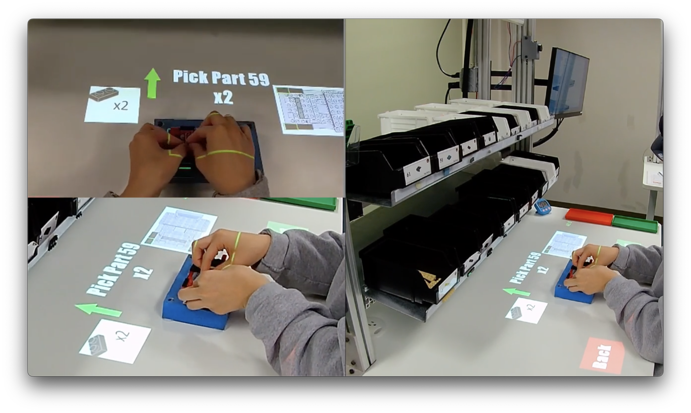
The output was rendered by Filmora in the MP4 video format with full HD resolution (1920x1080) at 30 frames per second, using H.264 compression. This was then resized to 720p (1280x720) by Handbrake. The final file size is reduced to about 20mb / minute from multiple gigabytes of source material. This greatly increases the responsiveness the annotation experience without significantly degrading visual quality.
The compressed 720p video is loaded in Kyno where two types of events were annotated. Instantaneous events (e.g., car breaks during assembly) are identified by placing a marker at the moment of occurrence. Events with a duration (e.g., the start and end of each assembly task) are assigned to sub-clips. Both markers and sub-clips are given standard names that denote the event type, and descriptions where additional detail is called for. The standard list of names is included in Appendix C, along with other important details about this process.
Finally, the Kyno project file is saved and annotation data is exported in XML format. A sample of that output is provided in Figure 4.37, based on participant #1051’s learning experiment. This is confirmed by line (2), which shows the data is associated with the file 1051-Learn.mp4. Lines (10) and (12) denote the start and end times of the “Car 1” sub-clip, each given in 1/90,000ths of a second.
<context-info>
<url>file:/Volumes/.../1051-Learn.mp4</url>
<size>173341872</size>
...
</context-info>
<title>1051-Learn</title>
<description>side camera views are...</description>
<marker>
<id>6436e1f6-b9a2-4a58-800a-12a13ed89ab7</id>
<timestamp time-base="1/90000">895175</timestamp>
<type>subclip</type>
<duration time-base="1/90000">17932825</duration>
<title>Car 1</title>
<description>First car duration</description>
</marker>4.11.4 XML Processing
A Python (v3.11) script was used to create a CSV comprised of performance data extracted data from all Kyno XML files. The process is outlined with pseudocode in Figure 4.38.
For each xmlFile:
Extract file metadata (url, size, etc.)
For each marker in xmlFile:
Extract marker details (id, timestamp, type, title, descript.)
If duration element present, add duration to marker
Convert timestamp and duration to seconds
Add marker to markers list
Categorize markers into subclips and other
Add data to xmlData with key (participant, phase)
For each participant, phase pair in xmlData:
Extract subclip markers for the participant and phase
For each subclip marker:
Format data (participant, phase, marker details) as row
Add row to csvData
Write csvData to a CSV fileprocess_data.py)
While the XML data includes annotations for both instantaneous events (e.g., breakage occurs or defect encountered) and those with duration (e.g., task completion time), only the latter are included in the resulting CSV. While instant events can provide important context for understanding performance, the focus of our analysis will be on task outcomes, which involve a duration.
The result includes columns for participant number, experiment number, and the event name, start time, duration, and description. For example, the data extracted for the first participant’s learn experiment is summarized in Table 4.7.
| Part | Exp | Event | Start | Dur | Description |
|---|---|---|---|---|---|
| 1001 | 1 | Car 1 | 6.28 | 97.933 | N/A |
| 1001 | 1 | Car 2 | 108.367 | 66.7 | N/A |
| 1001 | 1 | Break 3 | 178.367 | 76.033 | failed attempt to repair |
| 1001 | 1 | Car 4 | 260.933 | 68.9 | N/A |
| 1001 | 1 | Car 5 | 333.467 | 60.9 | N/A |
| 1001 | 1 | Car 6 | 397.333 | 66.933 | N/A |
| 1001 | 1 | Defect 7 | 467.867 | 27.333 | prebuilt missing piece |
| 1001 | 1 | Car 8 | 498.4 | 53.7 | corrected |
| 1001 | 1 | Car 9 | 556.067 | 47.833 | finishes at the buzzer |
This shows they attempted nine cars and completed seven. Breakage occurred during the third assembly and a repair was attempted, but the car was ultimately retired. Car 7 was also retired when a defect was noticed in the prebuilt. The last car was completed in only 47.8 seconds, just before the 10-minute time limit.
The output of this script was saved as i1_times.csv and carefully validated against the XML data, video recordings, and reports described next.
4.11.5 System Availability
Due to challenges associated with area and model-based tracking, described elsewhere, participants using the HL2 would experience system down time that we referred to as “drop-outs.” This was the result of a loss of tracking that caused the user interface to deactivate. All drop-outs were marked as subclips during video annotation process so the lost time could be accounted for.
Each drop-out event was later reviewed to assess how much impact it had on the current task. In some cases the drop-out occurred between cars or was disregarded by the participant. In others it caused worked to stop until tracking was reacquired. For each drop-out a value between 0.0 and 1.0 was assigned, based on the assessed impact.
The resulting times and weights could be used later to scale the drop-out duration accordingly, either for the overall analysis or to compare results with and without drop-out effect. Alternatively, they could be treated as system availability for OEE calculations.
This process was done manually and based on the PI’s best judgement after all other annotation work was complete. It was recorded in a separate Excel sheet, adjusted_drop_events.xlsx.
4.11.6 Report Generation
To assist with data validation and better understand factors that contribute to individual performance, a detailed report was generated for each participant. This was done as part of the same XML extraction Python script described above.
Each report aggregates participant demographics and car outcomes from observed and self-reported data, qualitative feedback from transcribed Markdown files, and quantitative event data from XML annotations. The result paints a comprehensive picture of the participant’s experience in a single Markdown report. This is demonstrated by Figure 4.39, a screenshot of the recall portion of #1001’s report.
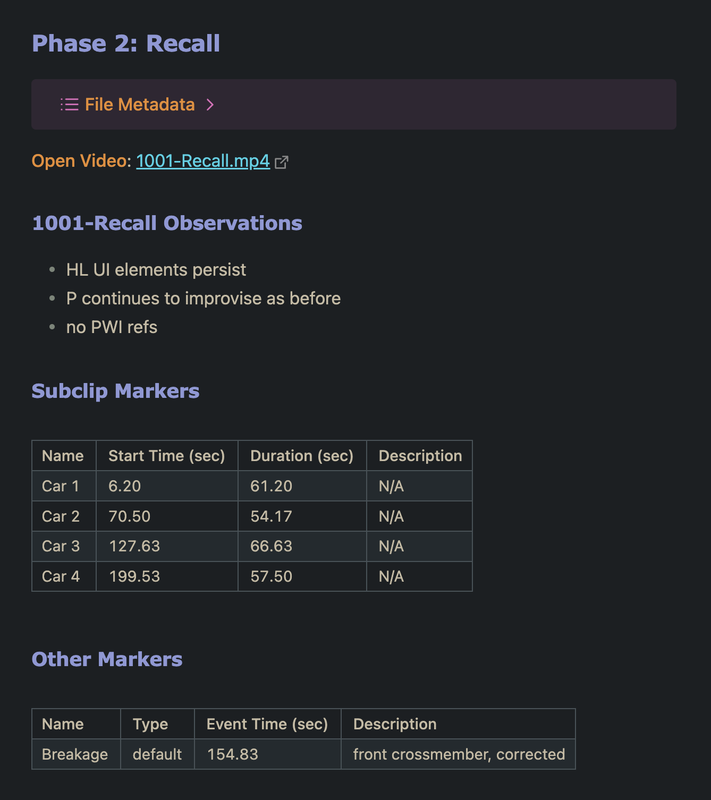
From the top, this report includes metadata (collapsed for brevity), clickable link to the video, list of PI’s observations, and summaries of performance (subclip) and event (other) markers. The instantaneous event markers included here provide valuable added context. For example, we can see that a breakage was corrected during the third car, likely contributing to its increased duration.
The formatting seen in this image was rendered by Obsidian41, a powerful tool for making and organizing Markdown documentation. This approach greatly facilitated the review of participant outcomes.
4.11.7 Data and Code Management
Like all academic work, the success of this study hinged on the credibility, transparency, and reproducibility of the research, data, and results. As such, data management was a critical consideration in the development of the data extraction and processing workflow. The plan carefully accounted for data storage, version management, and the file formats used. Those details aligned with an access plan balancing accessibility and portability with privacy and security.
Anonymous data was stored locally in three separate locations, all on secure hardware accessible only to the PI: an internal laptop hard drive, an external RAID5 storage array, and an external NVMe backup drive. Additionally, GitHub42 and BOX43 cloud services were employed to provide more redundancy and secure access to select team members. A detailed account of this plan, including the hardware, software, folder structures, and naming conventions used, are provided in Appendix D.
Key criteria for software selection included multiplatform compatibility, open-source licensing, and the ability to generate files using open, preferably text-based, standards. These characteristics were crucial to ensuring data portability and the reproducibility of results.
Wherever appropriate, working files, including all data analysis in R and Python, and manuscript development in Quarto44, were placed under version control using Git45, and synchronized to GitHub. HL2 source code was treated separately, as discussed in Section 4.5.5.
Isolated virtual environments were used with both Python and R projects to manage package dependencies. This setup guards against software conflicts and maintains consistent computational environments that are crucial for reliable and reproducible research outcomes.
The entire process was designed to ensure traceability, allowing every result to be reliably linked back to its original source data, bolstering the integrity of our research findings. The priorities outlined here were carried on throughout the analysis process, described next.
4.11.8 Data Extraction Challenges
Data extraction was a significant effort that required the bulk of the author’s time over the summer of 2023. A number of challenges were encountered along the way, predominantly related to the collection of data from recorded videos.
Four videos were recorded for each participant, two each from the learning recall phases. Each pair of videos were manually synchronized, composited, edited, and compressed, and annotated into a single output for each participant-phase. This process took approximately 1.5 hours per participant, but ranged between 45 minutes and over 4 hours, based on rough notes of progress. Of this, the video synchronization and annotation processes described in Section 4.11.3.2 took the most time.
Manually synchronizing videos was done by offsetting them to match movements and align the timelines. Tricky in the best of circumstances, occasional HL2 issues, including dropped video, crashes, and unsteady frame rates significantly elevated the challenge. Dropped video, a crash, or reset required piece-by-piece reconstruction of the session, with additional synchronizations. Variable frame rates, on the other hand, resulted in HL2 recordings with dropped frames and slightly non-linear playback. Over time, this leads to drift in the sync between sources, which cannot be corrected without destructive edits that would alter the timing data. In most cases the drift was insignificant, but in others it required a workaround. To address it we adopted the convention of using the side camera view for all annotations related to the workpiece, and the first-person view for any related to PWI consultations and HL2 issues. Consistently annotating events in this manner helped avoid including sync offset in a measured duration.
The time required to annotate each video varied with participant performance and behavior. Uneventful trials mostly involved marking the start and end time for each workpiece. In most cases occasional additions were made for various other events. In situations where the HMDMR tracking was problematic, or where PWI consultations were extensive, the required time and effort increased substantially. One trial included over 100 PWI consultations during the Recall phase, each with manually located start and end points. This took several hours to do accurately.
Otherwise, data extraction was relatively straightforward, with only two other noteworthy issues. While we had originally intended to count corrected errors, it proved impractical to consistently differentiate corrected errors from other participant behaviors. In many cases this required too much interpretation on the part of the scorer. Finally, we relied on handwritten notes taken by the PI for the final debrief and participant feedback. Some were terse and difficult to interpret, suggesting that important details may have been lost. In the future it would be better to record and digitally transcribe these sessions if acceptable.
Overall this process was time consuming but well planned and carefully executed for the given inputs. Future studies of this sort would greatly benefit from a synchronized multi-camera recording setup capable of directly rendering the desired screen layout, saving hours of editing time and eliminating the drift issues.
4.12 Data Cleaning and Analysis
This section will detail the procedures for data preparation, then summarize the intended analytical approach. Analysis will be implemented and more thoroughly detailed in the Results chapter to follow.
4.12.1 Tools and Methodology
R was used for all data cleaning and analysis. A mix of R Markdown (RMD) and Quarto (QMD) notebooks were created in the RStudio integrated development environment (IDE). The notebook format allows users to intermingle Markdown-formatted text, with code and output in a way that is very well suited to the exploratory nature of this work. This best approximates the idea of Literate Programming originally described by Donald Knuth46 as a narrative approach that interleaves code and writing in a way that promotes reader understanding (Knuth, 1984).
4.12.2 Cleaning and Transformation
The primary outputs of the prior extraction effort were:
-
i1_raw_data.xlsxcontaining the self-reported data and observed results, manually transcribed. Each tab contains a different data set. -
i1_times.csvcontaining event times extracted from the video annotations. Each row corresponds to a participant, experiment, car number combination. -
adjusted_drop_times.xlsxlisting all drop out events and the assigned weights. - Notes for each participant in
MDformat, compiled from observations and feedback.
Prior to analysis, additional cleaning and transformation was required. This included identifying parent-child relationships among events, scoring the TLX and SUS, correcting errors in the data, enforcing standard naming conventions and data types, and collecting the results into a single XLSX file.
Data was cleaned and transformed by R code found in the notebook forms_data.rmd. The process was iterative, with each step detailed in the following sections.
4.12.2.1 First Pass
The initial pass of cleaning and transformation can be summarized as follows:
- Process Demographics: Combine date and time into a single datetime column, cleans column names, and converts most columns to factors.
- Process Car Outcomes: Replace flag values with meaningful categories and assign sequence numbers.
- Process Car Times: Clean names, extract event types, assign sequence numbers, and categorize markers into parent and child events based on event types and times
- Correct Errors: Implement various changes to correct for previously identified errors in the data. Each is documented and justified in the code.
- Join and Save: Add unique IDs (UIDs) for events and outcomes, reorder essential columns, join table data, and save as CSV.
4.12.2.2 Second Pass
The first pass output was carefully reviewed, during which an improved categorization scheme was defined for all events. The new scheme, which simplified and standardized the ad-hoc labels generated during annotation, is summarized in Table 4.8.
| Type | Category | Description |
|---|---|---|
| Parent | Car | Assembly completed during the time allowed. |
| Parent | Breakage | Assembly retired due to breakage. |
| Parent | Defect | Assembly retired due to defect in prebuild. |
| Parent | Incomplete | Assembly incomplete when time expired. |
| Child | Drop | Time lost due to HL2 drop-out. |
| Child | PWI | Time lost to PWI reference (recall only). |
| Child | Repair | Time lost as repairs are made to assembly. |
| Child | System | Time lost due to other system related issues. |
The second pass of changes started by applying the updated categories. Again, each change is explicitly stated in the code. Adjusted drop times were then joined with the resulting data, and two new columns were generated for each type of child event. These totaled the number of events of each type for each parent, and their durations. Finally, those results were verified with automated tests and the results were written to CSV.
4.12.2.3 TLX and SUS Scoring
These instruments were scored as described by their providers. As noted in Section 4.11.1.2, TLX responses for the first five participants were corrected by rescaling to the standard 100-point system, rounding up. TLX and SUS results were written to separate CSV files and reviewed for correctness.
4.12.2.4 Final Output
Finally, the outputs described above were combined and saved as combined_results.xlsx, again with one tab for each: demographics, car outcomes, car times, car results, system usability scores, and tlx scores. For clarity, the car tabs differ as follows:
- Outcomes is the final version of the observed result and errors for each car.
- Times is the final version of the data extracted from video annotations, including child events, with event type and category.
- Results combines the outcomes and times tables, with one row per assembly and aggregating all time lost to child events.
Most analysis will focus on the Results tab, but the others are retained for traceability.
4.12.3 Analysis
Based on the primary and secondary research questions identified herein, several types of analysis will be required. Essential methods are summarized in the following list.47
-
Descriptive Statistics
Calculate means, standard deviations, and other descriptive measures for the dependent variables (e.g., task completion time, error rates, OEE) across different treatment groups.
Present summary statistics for participant demographics and prior experience.
-
Hypothesis Testing
- One-way ANOVA: Use to compare means of dependent variables (e.g., average time per car, average error count per car, OEE) across the four instructional methods (PWI, PAR, HMDAR, HMDMR).48
-
Effect Size Estimation
Partial eta-squared (η²) or omega-squared (ω²): Calculate these to assess the magnitude of the treatment effect on the dependent variables.
Cohen’s d: Used to compare the effect sizes between specific treatment groups, if post-hoc tests reveal significant differences.
-
Regression Analysis
- Multiple regression: Examine the relationship between operator characteristics (e.g., prior experience) and performance outcomes, while controlling for other relevant variables.
-
Correlation Analysis
- Pearson’s or Spearman’s correlation: Use these to investigate the relationships between perceived workload, usability, user satisfaction, and performance outcomes.
-
Qualitative Analysis and Visualization
Thematic analysis: Apply to the open-ended exit interviews to identify common themes and patterns in participants’ experiences and perceptions of the different instructional methods.
Data visualization: Create graphs, charts, and tables to present the results of the above analyses effectively, such as bar charts for comparing means, line graphs for displaying learning curves, and scatterplots for showing correlations.
4.13 Limitations of Study Design
Despite the careful design of this study it has its limitations. Those identified before the first trial are described below. Except as described therein, we consider each of these unlikely to influence the results and then only limited in their effect, making them very low risk overall.
The participant recruitment, sampling, and selection processs had a number of practical limitations. As is often the case with graduate research, participants were recruited from the university community and the sample was dominated by undergraduate engineering students. This “convenience sampling” approach limits our ability to infer from it the expected performance of manufacturing assembly operators, or the factors that influence it. That said, the ecological validity of this study is deliberately higher than most similar studies due to its realistic surroundings and validated task instructions.
Also, this study employs a method for assigning treatments that is as random as possible given the constraints. Strictly speaking, the method described in Section 4.6.4 may only be considered pseudo-random by some. In that case, the validity of statistical tests that assume random assignment may be compromised.
Additionally, the decision to offer the possibility of compensation as described in Section 4.6.2.3 was approved shortly after the trials commenced. The first five trials had been run and other participants had been recruited without knowledge of these perks. Due to the timing of this change and a delay between the pilot study and subsequent participants, the impact of this change is considered negligible but could potentially change the type and motivations of participants recruited and their results.
From a task design point of view, we must accept that LEGO cars are not, in fact, real cars. This does reduce task validity, but is again offset by the surroundings and validated instructions. Furthermore, the complexity of the task itself may be insufficient to fully assess learning, recall, and retention. On the other hand, one could argue that LEGO assembly is, in fact, more error prone than many automotive manufacturing tasks which are designed to prevent the possibility of errors. This error-proofing process is known as Poka-Yoke. It is a key component of Lean Manufacturing principles and considered superior to any error checking methods, especially those done by humans. Regardless, these limitations are reported in other studies and are likely the most impactful identified. We will use analytical methods to look for signs of insufficient difficulty in the Results chapter.
As detailed in Section 4.2.2, treatments were carefully designed to control for most recognized confounders, but some limitations have been identified. First, the HMDAR and HMDMR treatments are not exact replications of the PAR instructions. Even allowing for the inherent differences of these treatments, the user experience in each deviates in minor ways from the PAR implementation. We believe these deviations are small and have no material difference, but recognize that they may introduce uncontrolled differences.
Learning effect is another source of concern. The study’s between-groups design controls for it by preventing participants from carrying learning from one treatment to the next. However, the participant orientation process may create a minor dissimilarities in baseline task knowledge across treatment groups. It is introduced by an additional training step given only to the PAR, HMDAR, and HMDMR groups. This training introduces each participant to the operation of their assigned device so that the learning experiment that follows measures how they learned to perform the task, not how to operate the device. This is also a tradeoff, seeking to put all participants on equal footing for the first experiment, without any advantage in either task or treatment understanding. We can look for evidence of an effect during the analysis to follow.
Finally, this study did not assess the general cognitive or spatial skills of participants and therefore cannot balance the groups accordingly or use the results as independent variables during analysis. These measures were deliberately excluded to limit the overall time required for each trial. The instruments typically used would nearly double the expected duration, which would severely limit data collection. This aspect of the design is left as future work.
4.14 Summary
This chapter provided a comprehensive overview of the research methodology employed in this study, which aims to investigate the impact of different AR/MR instructional methods on operator learning, recall, and retention in a manufacturing assembly training context. The study’s design is grounded in an innovative, affordance-based framework that systematically compares the effects of specific AR/MR features, such as hands-free interaction, spatial registration, and user-centric displays, on training outcomes.
A key strength of this research lies in its rigorous and ecologically valid approach. The study is situated within an authentic manufacturing training environment, utilizing validated assembly tasks and instructional materials that closely resemble real-world conditions. This enhances the generalizability of the findings to industry settings and ensures their relevance for informing the practical implementation of AR/MR technologies in manufacturing training.
The study employs a multi-phase, mixed-methods design that combines quantitative performance measures with qualitative user feedback to provide a comprehensive assessment of the effectiveness of different instructional media types (IMTs). The inclusion of a traditional paper-based control group allows for a direct comparison of AR/MR interventions against standard training methods, while the multiple AR/MR treatment groups enable a nuanced examination of the relative benefits of specific technological affordances.
Another distinguishing feature of this research is its emphasis on both immediate learning outcomes and long-term retention. By assessing operator performance at multiple time points, including a delayed retention test several weeks after the initial training, the study provides valuable insights into the durability of the learning effects associated with different IMTs. This longitudinal perspective is crucial for understanding the practical value of AR/MR technologies in supporting sustained improvements in operator performance.
The chapter also highlighted the study’s meticulous attention to data collection and analysis procedures. The use of video recordings, photographs, and standardized performance metrics ensures a rich and reliable dataset for evaluating the impact of different IMTs on learning, recall, and retention outcomes. The application of appropriate statistical techniques, such as ANOVAs, effect size estimates, and regression analyses, enables a robust and nuanced examination of the research questions.
Furthermore, the study’s compliance with ethical guidelines and the steps taken to ensure participant safety and confidentiality demonstrate a strong commitment to research integrity. The transparent reporting of the study’s limitations, such as the convenience sampling approach and the potential influence of participant compensation, enhances the trustworthiness of the findings and provides important context for their interpretation.
In conclusion, the methods described in this chapter provide a solid foundation for the execution of this study and the subsequent presentation and interpretation of its results. The affordance-based framework, ecological validity, comprehensive assessment strategy, and rigorous data collection and analysis procedures set this research apart from previous work in the field. By addressing key gaps in the existing literature and employing a robust methodological approach, this study is well-positioned to make significant contributions to our understanding of how AR/MR technologies can be effectively leveraged to enhance manufacturing assembly training outcomes.
Located in the basement of the Shelby Center for Engineering Technology, room 0317. Address: 345 W Magnolia Ave, Auburn, AL 36849.↩︎
Takt time is a critical measure of the overall efficiency and performance of manufacturing systems. It sets the pace of production to align with customer demand, thus dictating the maximum time allowed at each workstation. By balancing the production line in this way, waste due to overproduction or delays is reduced (Ali & Deif, 2014). Takt time is integral to the Toyota Production System (TPS) developed by Taiichi Ohno (1988).↩︎
Lightguide: https://www.lightguidesys.com/↩︎
80/20: https://8020.net/↩︎
HoloLens2: https://www.microsoft.com/en-us/hololens↩︎
In the final defended analysis, OEE remained the primary effectiveness measure for the recall phase. Retention was ultimately evaluated using changes in task completion time and uncorrected error count, as explained in the corrected H3 retention subsection and Results chapter.↩︎
HoloLens2 Hardware Details: https://learn.microsoft.com/en-us/hololens/hololens2-hardware↩︎
MagicLeap: https://www.magicleap.com↩︎
Unity: https://unity.com/↩︎
Mixed Reality Toolkit (MRTK): https://learn.microsoft.com/en-us/windows/mixed-reality/mrtk-unity↩︎
Unity Pricing: https://unity.com/pricing#plans-student-and-hobbyist↩︎
Unity’s Terms of Service and other legal info: https://unity.com/legal↩︎
MRKT Github Repository and Licensing File: https://github.com/microsoft/MixedRealityToolkit-Unity↩︎
Vuforia Engine SDK: https://www.ptc.com/en/products/vuforia/vuforia-engine/ar-app-development↩︎
Vuforia Pricing and Licensing: https://developer.vuforia.com/library/faqs/pricing-and-licensing-options↩︎
Vuforia Terms of Use and Developer Agreement:
https://developer.vuforia.com/legal/tos
https://developer.vuforia.com/legal/vuforia-developer-agreement↩︎Trello: https://trello.com/home↩︎
MRTK Setup Instructions: https://learn.microsoft.com/en-us/windows/mixed-reality/develop/install-the-tools↩︎
MRTK Unity Documentation: https://learn.microsoft.com/en-us/windows/mixed-reality/mrtk-unity/mrtk2↩︎
MRTK Tutorials: https://learn.microsoft.com/en-us/training/modules/learn-mrtk-tutorials/↩︎
Vuforia Area Targets: https://developer.vuforia.com/library/environments/area-targets↩︎
Vuforia Creator App: https://developer.vuforia.com/library/tools/creator-app↩︎
Vuforia Area Targets in Unity: https://developer.vuforia.com/library/develop-area-targets/area-targets-unity↩︎
Vuforia Model Targets: https://developer.vuforia.com/library/objects/model-targets↩︎
LeoCAD: https://www.leocad.org/↩︎
LDraw: https://ldraw.org/↩︎
3DS File Type: https://en.wikipedia.org/wiki/.3ds↩︎
FBX File Type: https://en.wikipedia.org/wiki/FBX↩︎
This distinction had to be explained to several interested participants, which supports the notion that the differences between AR and VR are not yet well understood. Ultimately, no participants were eliminated by this requirement.↩︎
SignUpGenius: https://signupgenius.com↩︎
random.shuffleDocumentation: https://docs.python.org/3/library/random.html#random.shuffle↩︎Per AU IRB Expedited Category Guidance: https://cws.auburn.edu/shared/files?id=159&filename=AU%20Expedited%20Categories%20Guidance.doc↩︎
Except when he was quarantined for a week with COVID, during which PIs from collaborating studies generously substituted. The show must go on!↩︎
Collaborative Institutional Training Initiative: https://about.citiprogram.org/↩︎
5S is a methodology and mindset for maintaining a work space organized for efficiency and effectiveness. https://en.wikipedia.org/wiki/5S_(methodology)↩︎
Markdown: https://en.wikipedia.org/wiki/Markdown↩︎
Original Markdown Project Home: https://daringfireball.net/projects/markdown/↩︎
Filmora: https://filmora.wondershare.com/↩︎
Handbrake: https://handbrake.fr/↩︎
Obsidian: https://obsidian.md/↩︎
GitHub: https://github.com/↩︎
Quarto: https://quarto.org/↩︎
Donald E. Knuth is an esteemed American computer scientist, best known for “The Art of Computer Programming,” a multi-volume series widely regarded as one of the most comprehensive texts on algorithms. He also developed the TeX typesetting system, and made numerous other contributions that significantly shaped the landscape of computer science.↩︎
This list reflects the original planned analysis at the time of writing. The defended Results chapter reports the final analysis path actually used, including non-parametric tests, mixed models, and retention analyses based on changes in TCT and UCE rather than change in OEE.↩︎
-
The labels HMDAR and HMDMR refer to the same treatment conditions reported elsewhere in this dissertation more simply as AR and MR, respectively. The shorter forms are used in the Results and Conclusions chapters for readability.
Repeated measures ANOVA: Calculate to analyze changes in performance over time (e.g., learning rates, change in OEE) within and between treatment groups.
Post-hoc tests (e.g., Tukey’s HSD, Bonferroni correction): Apply these to determine which specific treatment groups differ significantly from each other, if the ANOVA results are significant.